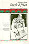
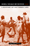

 <!DOCTYPE HTML PUBLIC "-//W3C//DTD HTML 4.0 Transitional//EN">
<html><!-- InstanceBegin template="/Templates/subjects.dwt" codeOutsideHTMLIsLocked="false" -->
<head>
<!-- InstanceBeginEditable name="doctitle" --> 
<title>History</title>
<!-- InstanceEndEditable --> 
<link rel="stylesheet" href="style.css" type="text/css">
<!-- InstanceBeginEditable name="head" --><!-- InstanceEndEditable --> <!-- InstanceParam name="Our Books" type="URL" value="img/our_books.gif" -->
</head>
<!-- Site designed by D a w n  D a n i s h, Copyright 2005 Temple University.  All Rights Reserved. -->
<body bgcolor="#FFFFFF" leftMargin="0" topMargin="0" rightMargin="0">
<!-- top banner table -->
<table width="100%" border="0" cellpadding="0" cellspacing="0">
  <tr> 
    <td valign="top" align="left" width="100%" nowrap><a name="top"></a><!-- InstanceBeginEditable name="header" --><!-- InstanceEndEditable --></td>
  </tr>
  <!-- navigation -->
  <tr> 
    <td bgcolor="#990033"></td>
  </tr>
  <tr> 
    <td bgcolor="#E5DCCB"></td>
  </tr>
  <tr> 
    <td align="center" valign="top" nowrap bgcolor="3D607A"><span class="navigation"><a class="navigation" href="index.html" TITLE="Welcome to Temple University Press">Home</a> 
      | <a class="navigation" href="books.html" TITLE="Browse our catalog or search for a book">Our 
      Books</a> | <a class="navigation" href="contact.html" TITLE="Questions? Comments? Tell us!">Contact 
      Us</a> | <a class="navigation" href="order.html" TITLE="Online ordering or order by phone, fax, or mail">Place 
      an Order</a> | <a class="navigation" href="br.html" TITLE="Book Reviews">Media</a> 
      | <a class="navigation" href="press.html" TITLE="Meet the Press">Press 
      Info</a> | <a class="navigation" href="links.html" TITLE="Other university press resources">Links</a> 
      </span></td>
  </tr>
  <tr> 
    <td bgcolor="#3D607A"></td>
  </tr>
  <tr> 
    <td bgcolor="#333333"></td>
  </tr>
</table>
<table border="0" cellspacing="0" cellpadding="0" width="100%">
  <!--DWLayoutTable-->
    <tr valign="top"> 
      <td width="200" align="left" valign="top" bgcolor="#E5DCCB"> 
        <!-- left menu -->
         <table border="0" cellspacing="0" cellpadding="5" width="100%">
          <tr valign="top"> 
            <td valign="top" align="left"><p class="leftnav"><a href="awards.html" TITLE="Read about award-winning books"> 
              Award-Winning Books</a><p class="leftnav">
                <a href="subjects.html" TITLE="Over 30 subject categories to browse">Subject 
                Index</a><p class="leftnav">
                <a href="series.html" TITLE="Books in series">Series 
                Listing</a><p class="leftnav">
                <a href="studyguides/index.html" TITLE="For further study">Study 
                Guides</a><br>&nbsp;</td>
          </tr>
        </table></td>      
    <td valign="top" align="left" width="100%"> 
      <!-- InstanceBeginEditable name="content table" --> 
      <table border="0" cellspacing="0" cellpadding="12" width="100%">
        <!--DWLayoutTable-->
		 <tr> 
          <td width="75" valign="top" align="right"><a href="titles/886b_reg.html"></a></td>
          <td valign="top" align="left"><a href="titles/886b_reg.html"><b>Agricultural 
            and Pastoral Societies in Ancient and Classical History</b></a><br>
            edited by Adas, Michael <p class="small">376 pp &#149; 7x10 
              &#149; Fall 2000<br>
              paper 978-1-56639-832-9<br>
              cloth 978-1-56639-831-2</p></td>
        </tr>
		<tr> 
          <td width="75" valign="top" align="right"><p class="normal"><a href="titles/0886-3_reg.html"></a></td>
          <td valign="top" align="left"><a href="titles/0886-3_reg.html"><b>Essays on Twentieth-Century History</b></a><br>		  
			  edited by Adas, Michael
			    <p class="small"> 
			350 pp &#149; 6x9 &#149; Spring 2010<br>
            paper 978-1-4399-0270-7 <BR>
          cloth  978-1-4399-0269-1<br>
               </p></td>
        </tr>
        <tr> 
          <td width="75" valign="top" align="right"><a href="titles/886a_reg.html"></a></td>
          <td valign="top" align="left"><a href="titles/886a_reg.html"><b>Islamic 
            and European Expansion<br>
            </b>The Forging of a Global Order</a><br>
            edited by Adas, Michael <p class="small">400 pp &#149; 6x9 
              &#149; Fall 1993<br>
              paper 978-1-56639-068-2<br>
              cloth 978-1-56639-067-5<br>
               </p></td>
        </tr> <tr>
                <td width="75" valign="top" align="right"><a href="titles/2345_reg.html"></a></td>
                
          <td valign="top" align="left"><a href="titles/2345_reg.html"><font size="2" face="Verdana, Arial, Helvetica, sans-serif"><b>Upon the Ruins of Liberty<br>
            </b>Slavery, the President's House at Independence National Historical Park, and Public Memory</font></a><br>
                  <font size="2" face="Verdana, Arial, Helvetica, sans-serif">Aden, Roger C.</font>
                  <p class="small"><font color="#990033">New in Paperback!</font><br>
                    246 pp • 6x9 • Spring 2017<br>
                    paper 978-1-4399-1200-3<br>
                  cloth 978-1-43991-199-0</p></td>
              </tr>
        <tr> 
          <td width="75" valign="top" align="right"><a href="titles/133_reg.html"></a></td>
          <td valign="top" align="left"><a href="titles/133_reg.html"><b>Marxism 
            in Latin America</b></a><br>
            edited by Aguilar, Luis E. <p class="small">412 pp &#149; 4x7 
              &#149; Spring 1978<br>
              paper 978-0-87722-108-1<br>
              cloth 978-0-87722-106-7<br>
               </p></td>
        </tr>
              <tr>
                <td width="75" valign="top" align="right"><a href="titles/2271_reg.html"></a></td>
                <td valign="top" align="left"><a href="titles/2271_reg.html"><font size="2" face="Verdana, Arial, Helvetica, sans-serif"><b>200 Years of Latino History in Philadelphia
</b></font></a><br>
                  <font size="2" face="Verdana, Arial, Helvetica, sans-serif"><i>Al D&#237;a</i>, The Staff of
</font>
                  <p class="small">200 pp &#149; 8.5x11 &#149; Fall 2012<br>
                    cloth 978-0-578-10660-1</p></td>
              </tr>
        <tr> 
          <td width="75" valign="top" align="right"><a href="titles/1739_reg.html"></a></td>
          <td valign="top" align="left"><a href="titles/1739_reg.html"><b>Ethnic 
            Pride, American Patriotism<br>
            </b>Slovaks and Other New Immigrants in the Interwar Era</a><br>
            Alexander, June Granatir <p class="small">296 pp &#149; 6x9 
              &#149; Spring 2004<br>
              paper 978-1-59213-252-2<br>
              cloth 978-1-59213-251-5<br>
               </p></td>
        </tr>
        <tr> 
          <td width="75" valign="top" align="right"><a href="titles/1625_reg.html"></a></td>
          <td valign="top" align="left"><a href="titles/1625_reg.html"><b>The 
            Nazi Census<br>
            </b>Identification and Control in the Third Reich</a><br>
            Aly, Götz and Karl Heinz Roth, foreword by Edwin Black, translated 
            by Assenka Oksiloff <p class="small">192 pp &#149; 5.5x8.25 
              &#149; Spring 2004<br>
              paper 978-1-59213-259-1<br>
              cloth 978-1-59213-199-0<br>
               </p></td>
        </tr>
              <tr>
                <td width="75" valign="top" align="right"><a href="titles/2200_reg.html"></a></td>
          <td valign="top" align="left"><a href="titles/2200_reg.html"><font size="2" face="Verdana, Arial, Helvetica, sans-serif"><b>Vigilantes and Lynch Mobs<br>
            </b>Narratives of Community and Nation</font></a><br>
                  <font size="2" face="Verdana, Arial, Helvetica, sans-serif">Arellano, Lisa 
</font>
                  <p class="small">204 pp &#149; 6x9 &#149; Fall 2012<br>
                    paper 978-1-4399-0845-7<br>
                    cloth 978-1-4399-0844-0<br>
                     </p></td>
              </tr>
        <tr> 
          <td width="75" valign="top" align="right"></td>
          <td valign="top" align="left"><a href="titles/116_reg.html"><b>Genocide 
            in Paraguay</b></a><br>
            edited by Arens, Richard <p class="small">224 pp &#149; Fall 
              1977<br>
              cloth 978-0-87722-088-6</p></td>
        </tr>
        <tr> 
          <td width="75" valign="top" align="right"><a href="titles/371_reg.html"></a></td>
          <td valign="top" align="left"><a href="titles/371_reg.html"><b>Monopoly's 
            Moment<br>
            </b>The Organization and Regulation of Canadian Utilities, 1830-1930</a><br>
            Armstrong, Christopher and H. V. Nelles <p class="small">384 
              pp &#149; Spring 1986<br>
              cloth 978-0-87722-404-4</p></td>
        </tr>
        <tr> 
          <td width="75" valign="top" align="right"></td>
          <td valign="top" align="left"><a href="titles/328_reg.html"><b>Saving 
            the Waifs</b></a><br>
            Ashby, LeRoy <p class="small">Spring 1984<br>
              cloth 978-0-87722-337-5</p></td>
        </tr>
        <tr> 
          <td width="75" valign="top" align="right"><a href="titles/175_reg.html"></a></td>
          <td valign="top" align="left"><a href="titles/175_reg.html"><b>Social 
            Darwinism<br>
            </b>Science and Myth in Anglo-American Social Thought</a><br>
            Bannister, Robert C. <p class="small">292 pp &#149; Fall 1988<br>
              paper  978-0-87722-566-9<br>
              cloth 978-0-87722-155-5<br>
               </p></td>
        </tr>
              <tr>
                <td width="75" valign="top" align="right"><a href="titles/2232_reg.html"></a></td>
          <td valign="top" align="left"><a href="titles/2232_reg.html"><font size="2" face="Verdana, Arial, Helvetica, sans-serif"><b>Atlanta Unbound<br>
            </b>Enabling Sprawl through Policy and Planning</font></a><br>
                  <font size="2" face="Verdana, Arial, Helvetica, sans-serif">Basmajian, Carlton Wade</font>
                  <p class="small">288 pp &#149; 7x10 &#149; Fall 2013<br>
                          paper  978-1-4399-0940-9<br>
    cloth  978-1-4399-0939-3</p></td>
              </tr>
              <tr>
                <td width="75" valign="top" align="right"><a href="titles/2432_reg.html"></a></td>
                
          <td valign="top" align="left"><a href="titles/2432_reg.html"><font size="2" face="Verdana, Arial, Helvetica, sans-serif"><b>The Hirschfeld Archives<br>
            </b>Violence, Death, and Modern Queer Culture</font></a><br>
                  <font size="2" face="Verdana, Arial, Helvetica, sans-serif">Bauer, Heike</font>
                  <p class="small">240 pp &#149; 6x9 &#149; Spring 2017<br>
                    paper 978-1-4399-1433-5
					<br>
                cloth 978-1-4399-1432-8
                   </p></td>
              </tr>
              <tr>
                <td width="75" valign="top" align="right"><a href="titles/2363_reg.html"></a></td>
                
          <td valign="top" align="left"><a href="titles/2363_reg.html"><font size="2" face="Verdana, Arial, Helvetica, sans-serif"><b>Sexology and Translation<br>
            </b>Cultural and Scientific Encounters across the Modern World</font></a><br>
                  <font size="2" face="Verdana, Arial, Helvetica, sans-serif">edited by Bauer, Heike</font>
                  <p class="small">284 pp &#149; 6x9 &#149; Fall 2015<br>
                    paper 978-1-4399-1249-2
					<br>
                cloth 978-1-4399-1248-5                   </p></td>
              </tr>
              <tr> 
          <td width="75" valign="top" align="right"><a href="titles/2464_reg.html"></a></td>
          <td valign="top" align="left"><a href="titles/2464_reg.html"><b>Knowledge for Social Change</b><br>
          Bacon, Dewey, and the Revolutionary Transformation of Research Universities in the Twenty-First Century</a><br>
            Benson, Lee, Ira Harkavy, John Puckett, Matthew Hartley, Rita A. Hodges, Francis E. Johnston, and Joann Weeks
 
            <p class="small">206 pp &#149; 6x9 &#149; Spring 2017<br>
              paper 978-1-4399-1519-6<br>
              cloth  978-1-4399-1518-9<br>
               </p></td>
        </tr>
        <tr> 
          <td width="75" valign="top" align="right"><a href="titles/406_reg.html"></a></td>
          <td valign="top" align="left"><a href="titles/406_reg.html"><b>Presenting 
            the Past<br>
            </b>Essays on History and the Public</a><br>
            edited by Benson, Susan Porter, Stephen Brier and Roy Rosenzweig 
            <p class="small">400 pp &#149; 6x9 &#149; Spring 1986<br>
              paper 978-0-87722-413-6<br>
              cloth 978-0-87722-406-8<br>
               </p></td>
        </tr>
        <tr> 
          <td width="75" valign="top" align="right"></td>
          <td valign="top" align="left"><a href="titles/552_reg.html"><b>My 
            Diary North and South<br>
            </b>William Howard Russell</a><br>
            edited by Berwanger, Eugene H. <p class="small">384 pp &#149; 
              Fall 1987<br>
              cloth 978-0-87722-522-5</p></td>
        </tr>
        <tr> 
          <td width="75" valign="top" align="right"><a href="titles/543_reg.html"></a></td>
          <td valign="top" align="left"><a href="titles/543_reg.html"><b>The 
            Roots of Community Organizing, 1917-1939</b></a><br>
            Betten, Neil and Michael J. Austin, contributions by Robert Fisher, 
            William E. Hershey, Raymond A. Hohl and Marc Lee Raphael <p class="small">230 
              pp &#149; 5.5x8.25 &#149; Fall 1989<br>
              cloth 978-0-87722-662-8<br>
               </p></td>
        </tr>
		<tr> 
          <td width="75" valign="top" align="right"><p class="normal"><a href="titles/2181_reg.html"></a></td>
          <td valign="top" align="left"><p class="normal"><a href="titles/2181_reg.html"><b>St. Peter's Church<br>
          </b>Faith in Action for 250 Years<br>
          </a>
			  Biddle, Cordelia Frances, Elizabeth S. Browne, Alan J. Heavens and Charles P. Peitz</p>
           <p class="small"> 272 pp &#149; 8x10 &#149; Fall 2011<br>
           cloth  978-1-43990-795-5</p></td>
        </tr>
		 <tr> 
          <td width="75" valign="top" align="right"><p class="normal"><a href="titles/1839_reg.html"></a></td>
          <td valign="top" align="left"><p class="normal"><a href="titles/1839_reg.html"><b>Tasting Freedom<br>
              </b>Octavius Catto and the Battle for Equality in Civil War America</a><br>
             Biddle, Daniel R. and Murray Dubin</p>
            <p class="small"><font color="#990033">New in Paperback!</font><br>
            632 pp &#149; Fall 2017<br>
			 paper 978-1-4399-1349-9<br>


            cloth 978-1-59213-465-6<br>
               </p></td>
        </tr>
        <tr> 
          <td width="75" valign="top" align="right"><a href="titles/1391_reg.html"></a></td>
          <td valign="top" align="left"><a href="titles/1391_reg.html"><b>Modern 
            American Queer History</b></a><br>
            edited by Black, Allida M. <p class="small">312 pp &#149; 7x10 
              &#149; Spring 2001<br>
              paper 978-1-56639-872-5<br>
              cloth 978-1-56639-871-8<br>
               </p></td>
        </tr>
        <tr> 
          <td width="75" valign="top" align="right"><a href="titles/1716_reg.html"></a></td>
          <td valign="top" align="left"><a href="titles/1716_reg.html"><b>Rookies 
            of the Year</b></a><br>
            Bloss, Bob <p class="small">224 pp &#149; 6x9 &#149; Spring 
              2005<br>
              cloth 978-1-59213-164-8<br>
               </p></td>
        </tr>
        <tr> 
          <td width="75" valign="top" align="right"><a href="titles/438_reg.html"></a></td>
          <td valign="top" align="left"><a href="titles/438_reg.html"><b>Social 
            Movements and Political Power<br>
            </b>Emerging Forms of Radicalism in the West</a><br>
            Boggs, Carl <p class="small">304 pp &#149; 6x9 &#149; Fall 
              1986<br>
              paper 978-0-87722-622-2<br>
              cloth 978-0-87722-447-1<br>
               </p></td>
        </tr>
		<tr> 
          <td width="75" valign="top" align="right"><p class="normal"><a href="titles/2069_reg.html"></a></td>
          <td valign="top" align="left"><p class="normal"><a href="titles/2069_reg.html"><b>Cleavage Politics and the Populist Right<br>
              </b>The New Cultural Conflict in Western Europe</a><br>
			  Bornschier, Simon</p>
			<p class="small"> 260 pp &#149; 6x9 &#149; Spring 2010<br>
            cloth  978-1-4399-0192-2<br>
               </p></td>
        </tr>
        <tr> 
          <td width="75" valign="top" align="right"><a href="titles/212_reg.html"></a></td>
          <td valign="top" align="left"><a href="titles/212_reg.html"><b>Backyard 
            Revolution<br>
            </b>Understanding the New Citizen Movement</a><br>
            Boyte, Harry C. <p class="small">288 pp &#149; Fall 1980<br>
              paper 978-0-87722-229-3<br>
              cloth  978-0-87722-192-0</p></td>
        </tr>
        <tr> 
          <td width="75" valign="top" align="right"><p class="normal"><a href="titles/2375_reg.html"></a></td>
          <td valign="top" align="left"><p class="normal"><a href="titles/2375_reg.html"><b>Boathouse Row<br>
              </b>Waves of Change in the Birthplace of American Rowing<br>
              </a>Brown, Dotty </p>
            <p class="small">288 pp &#149; 10x8 &#149; Fall 2016<br>
              cloth  978-1-4399-1282-9<br>
               </p></td>
        </tr>
        <tr> 
          <td width="75" valign="top" align="right"><a href="titles/862_reg.html"></a></td>
          <td valign="top" align="left"><a href="titles/862_reg.html"><b>History 
            from South Africa<br>
            </b>Alternative Visions and Practices</a><br>
            edited by Brown, Joshua, Patrick Manning, Karin Shapiro and Jon Wiener 
            <p class="small">467 pp &#149; Spring 1991<br>
              paper  978-0-87722-849-3<br>
              cloth 978-0-87722-848-6</p></td>
        </tr>
		 <tr>
                <td width="75" valign="top" align="right"><a href="titles/1997_reg.html"></a></td>
          <td valign="top" align="left"><a href="titles/1997_reg.html"><font size="2" face="Verdana, Arial, Helvetica, sans-serif"><b>The Historiography of Communism</b></font></a><br>
                  <font size="2" face="Verdana, Arial, Helvetica, sans-serif">Brown, Michael E.</font>
                  <p class="small">264 pp &#149; 6x9 &#149; Fall 2008<br>
                    paper 978-1-59213-922-4<br>
					cloth  978-1-59213-921-7<br>
               </p></td>
        </tr>
		<tr> 
          <td width="75" valign="top" align="right"><p class="normal"><a href="titles/1879_reg.html"></a></td>
          <td valign="top" align="left"><p class="normal"><a href="titles/1879_reg.html"><b>Resentment's Virtue<br>
              </b>Jean Améry and the Refusal to Forgive</a><br>
			  Brudholm, Thomas, foreword by Jeffrie Murphy</p>
           
			<p><span class="small"> 256 pp &#149; 6x9 &#149; Fall 2007<br>
			paper 978-1-59213-567-7<br>
			cloth 978-1-59213-566-0<br>
               
			</span></p></td>
        </tr>
                            <tr>
                <td width="75" valign="top" align="right"><a href="titles/2251_reg.html"></a></td>
                
          <td valign="top" align="left"><a href="titles/2251_reg.html"><font size="2" face="Verdana, Arial, Helvetica, sans-serif"><b>Disability and Passing<br>
            </b>Blurring the Lines of Identity</font></a><br>
                  <font size="2" face="Verdana, Arial, Helvetica, sans-serif">edited by Brune, Jeffrey A. and Daniel J. Wilson</font>
                  <p class="small">216 pp &#149; 5.5x8.25 &#149; Spring 2013<br>
                    paper 978-1-4399-0980-5
					<br>
                    cloth 978-1-4399-0979-9<BR>
                  </p></td>
              </tr>
        <tr> 
          <td width="75" valign="top" align="right"><a href="titles/777_reg.html"></a></td>
          <td valign="top" align="left"><a href="titles/777_reg.html"><b>Paradise 
            Remade<br>
            </b>The Politics of Culture and History in Hawai'i</a><br>
            Buck, Elizabeth <p class="small">288 pp &#149; 5.5x8.25 &#149; 
              Fall 1992<br>
              paper 978-1-56639-200-6<br>
              cloth 978-0-87722-978-0</p></td>
        </tr>
         <tr>
                <td width="75" valign="top" align="right"><a href="titles/2469_reg.html"></a><br>
                &nbsp;</td>
                
          <td valign="top" align="left"><a href="titles/2469_reg.html"><font size="2" face="Verdana, Arial, Helvetica, sans-serif"><b>Against the Deportation Terror<br>
            </b>Organizing for Immigrant Rights in the Twentieth Century</font></a><br>
                  <font size="2" face="Verdana, Arial, Helvetica, sans-serif">Buff, Rachel Ida  </font>
                   <p class="small">
                    282 pp &#149; 6x9 &#149; Fall 2017<br>
                    paper 978-1-4399-1534-9<br>
                  cloth 978-1-4399-1533-2</p></td>
              </tr>
        <tr> 
          <td width="75" valign="top" align="right"><a href="titles/574_reg.html"></a></td>
          <td valign="top" align="left"><a href="titles/574_reg.html"><b>History 
            and the New Left<br>
            </b>Madison, Wisconsin, 1950-1970</a><br>
            edited by Buhle, Paul <p class="small">457 pp &#149; Fall 1989<br>
              paper  978-0-87722-836-3<br>
              cloth 978-0-87722-653-6</p></td>
        </tr>
        <tr> 
          <td width="75" valign="top" align="right"><p class="normal"><a href="titles/1841_reg.html"></a></td>
          <td valign="top" align="left"><p class="normal"><a href="titles/1841_reg.html"><b>The 
              Smoke of the Gods<br>
              </b>A Social History of Tobacco<br>
              </a>Burns, Eric </p>
            <p><span class="small">296 pp &#149; 6x9 &#149; Fall 2006<br>
              cloth 978-1-59213-480-9</span></p>
			</td>
        </tr>
        <tr> 
          <td width="75" valign="top" align="right"><a href="titles/1684_reg.html"></a></td>
          <td valign="top" align="left"><a href="titles/1684_reg.html"><b>The 
            Spirits of America<br>
            </b>A Social History of Alcohol</a><br>
            Burns, Eric <p class="small">344 pp &#149; 6x9 &#149; Fall 
              2003<br>
              paper  978-1-59213-269-0<br>
              cloth 978-1-59213-214-0<br>
               </p></td>
        </tr>
        <tr> 
          <td width="75" valign="top" align="right"><a href="titles/1014_reg.html"></a></td>
          <td valign="top" align="left"><a href="titles/1014_reg.html"><b>Bernard 
            Berenson and the Twentieth Century</b></a><br>
            Calo, Mary Ann <p class="small">288 pp &#149; 5.5x8.25 &#149; 
              Fall 1993<br>
              paper 978-1-56639-117-7<br>
              cloth  978-1-56639-116-0<br>
               </p></td>
        </tr>
        <tr> 
          <td width="75" valign="top" align="right"></td>
          <td valign="top" align="left"><a href="titles/326_reg.html"><b>Race 
            Relations in Wartime Detroit<br>
            </b>The Sojourner Truth Housing Controversy, 1937-1942</a><br>
            Capeci, Jr., Dominic J. <p class="small">Spring 1984<br>
              cloth 978-0-87722-339-9</p></td>
        </tr>
		<tr> 
          <td width="75" valign="top" align="right"><p class="normal"><a href="titles/1934_reg.html"></a></td>
          <td valign="top" align="left"><p class="normal"><a href="titles/1934_reg.html"><b>On the Margins of Citizenship<br>
              </b>Intellectual Disability and Civil Rights in Twentieth-Century America<br>
              </a>Carey, Allison</p>
			<span class="small"> 286 pp &#149; 6x9 &#149; Fall 2009<br>
            paper 978-1-59213-698-8<br>
			cloth  978-1-59213-697-1<br>
               
			</span></td>
        </tr>
        <tr> 
          <td width="75" valign="top" align="right"><a href="titles/1211_reg.html"></a></td>
          <td valign="top" align="left"><a href="titles/1211_reg.html"><b>Readings 
            in American Indian Law<br>
            </b>Recalling the Rhythm of Survival</a><br>
            edited by Carrillo, Jo <p class="small">353 pp &#149; 7x10 
              &#149; Fall 1997<br>
              paper 978-1-56639-582-3<br>
              cloth 978-1-56639-581-6<br>
               </p></td>
        </tr><!--
		<tr> 
          <td width="75" valign="top" align="right"><p class="normal"><a href="titles/2196_reg.html"></a></td>
          <td valign="top" align="left"><p class="normal"><a href="titles/2196_reg.html"><b>Free!<br>
              </b>Great Escapes from Slavery on the Underground Railroad</a><br>
			  Cary, Lorene</p>
            <p class="small">
			86 pp &#149; 6x9 &#149; Fall 2011<br>
            paper 0-9819560-2-5<BR>
			EAN 978-0-9819560-2-2</p></td>
        </tr>-->
        <tr> 
          <td width="75" valign="top" align="right"><a href="titles/1824_reg.html"></a></td>
          <td valign="top" align="left"><a href="titles/1824_reg.html"><b>Chinese 
            American Transnationalism<br>
            </b>The Flow of People, Resources, and Ideas between China and America 
            during the Exclusion Era</a><br>
            edited by Chan, Sucheng <p class="small">312 pp &#149; 6x9 
              &#149; Fall 2005<br>
              paper 978-1-59213-435-9<br>
              cloth 978-1-59213-434-2<br>
                </p></td>
        </tr>
        <tr> 
          <td width="75" valign="top" align="right"><a href="titles/1853_reg.html"></a></td>
          <td valign="top" align="left"><a href="titles/1853_reg.html"><b>The 
            Vietnamese American 1.5 Generation<br>
            </b>Stories of War, Revolution, Flight, and New Beginnings</a><br>
            edited by Chan, Sucheng 
            <p class="small">344 pp &#8226; 6x9 &#8226; Spring 2006<br>
              paper 978-1-59213-501-1<br>
			  cloth 978-1-59213-500-4<br>
                </p></td>
        </tr>
        <tr>
           <td width="75" valign="top" align="right"><span class="normal"><a href="titles/2458_reg.html"></a></span></td>
                <td valign="top" align="left"><a href="titles/2458_reg.html"><font size="2" face="Verdana, Arial, Helvetica, sans-serif"><b>Rulers and Capital in Historical Perspective<br>
				</b>State Formation and Financial Development in India and the United States</font></a><br>
                  <font size="2" face="Verdana, Arial, Helvetica, sans-serif">Chatterjee, Abhishek </font>
                  <p class="small">188 pp &bull; 5.5x8.25 &bull; Fall 2017<br>
                    cloth  978-1-4399-1500-4<br>
               </p></td>
        </tr>

        <tr> 
          <td width="75" valign="top" align="right"><a href="titles/conwell_reg.html"></a></td>
          <td valign="top" align="left"><a href="titles/conwell_reg.html"><b>Acres 
            of Diamonds</b></a><br>
            Conwell, Russell H., foreword by Russell F. Weigley, introduction 
            by David Adamany <p class="small">96 pp &#149; 5x7 &#149; Spring 
              2002<br>
              cloth 978-1-56639-962-3<br>
               </p></td>
        </tr>
        <tr> 
          <td width="75" valign="top" align="right"><a href="titles/1337_reg.html"></a></td>
          <td valign="top" align="left"><a href="titles/1337_reg.html"><b>Cowboys 
            as Cold Warriors<br>
            </b>The Western and U.S. History</a><br>
            Corkin, Stanley <p class="small">288 pp &#149; 6x9 &#149; Spring 
              2004<br>
              paper 978-1-59213-254-6<br>
              cloth 978-1-59213-253-9<br>
               </p></td>
        </tr>
        <tr>
                <td width="75" valign="top" align="right"><a href="titles/2399_reg.html"></a></td>
                
          <td valign="top" align="left"><a href="titles/2399_reg.html"><font size="2" face="Verdana, Arial, Helvetica, sans-serif"><b>A Nice Place to Visit</b><br> Tourism and Urban Revitalization in the Postwar Rustbelt</font></a><br>
                  <font size="2" face="Verdana, Arial, Helvetica, sans-serif">Cowan, Aaron</font>
                  <p class="small">236 pp &#149; 6x9  &#149; Spring 2016<br>
                    paper 978-1-4399-1346-8<br>cloth 978-1-4399-1345-1<br>
                   </p></td>
              </tr>
        <tr> 
          <td width="75" valign="top" align="right"><a href="titles/558_reg.html"></a></td>
          <td valign="top" align="left"><a href="titles/558_reg.html"><b>Worktime 
            and Industrialization<br>
            </b>An International History</a><br>
            edited by Cross, Gary <p class="small">256 pp &#149; Fall 1988<br>
              cloth 978-0-87722-582-9</p></td>
        </tr>
        <tr> 
          <td width="75" valign="top" align="right"><a href="titles/1614_reg.html"></a></td>
          <td valign="top" align="left"><a href="titles/1614_reg.html"><b>Labor's 
            Time<br>
            </b>Shorter Hours, the UAW, and the Struggle for American Unionism</a><br>
            Cutler, Jonathan <p class="small">256 pp &#149; 5.5x8.25 &#149; 
              Spring 2004<br>
              paper 978-1-59213-247-8<br>
              cloth 978-1-59213-246-1<br>
               </p></td>
        </tr>
        <tr> 
          <td width="75" valign="top" align="right"><a href="titles/1066_reg.html"></a></td>
          <td valign="top" align="left"><a href="titles/1066_reg.html"><b>Eyes 
            Without Country<br>
            </b>Searching for a Palestinian Strategy of Liberation</a><br>
            Dajani, Souad R. <p class="small">256 pp &#149; 6x9 &#149; 
              Fall 1994<br>
              paper  978-1-56639-241-9<br>
              cloth 978-1-56639-240-2</p></td>
        </tr>
        <tr> 
          <td width="75" valign="top" align="right"><a href="titles/681_reg.html"></a></td>
          <td valign="top" align="left"><a href="titles/681_reg.html"><b>Myth 
            and Modern Philosophy</b></a><br>
            Daniel, Stephen H. <p class="small">256 pp &#149; Fall 1989<br>
              cloth  978-0-87722-644-4</p></td>
        </tr>
		<tr> 
          <td width="75" height="114" align="right" valign="top"><p class="normal"><a href="titles/2123_reg.html"></a></td>
          <td valign="top" align="left"><p class="normal"><a href="titles/2123_reg.html"><b>Saving San Francisco</b><br>
          Relief and Recovery after the 1906 Disaster</a><br>
		  Davies, Andrea Rees </p>
            <p class="small">
			232 pp &#149; 6x9 &#149; Fall 2011<br>
			paper  978-1-4399-0433-6<br>
            cloth  978-1-4399-0432-9<br>
               </p></td>
       </tr>
		 <tr> 
                <td width="75" valign="top" align="right"><a href="titles/1830_reg.html"></a></td>
                <td valign="top" align="left"><a href="titles/1830_reg.html"><font size="2" face="Verdana, Arial, Helvetica, sans-serif"><b>The 
                  Eagles Encyclopedia</b></font></a><br>
                  <font size="2" face="Verdana, Arial, Helvetica, sans-serif">Didinger, 
                  Ray and Robert S. Lyons</font>
                  <p class="small">336 pp &#149; 8.5x11 &#149; Fall 2005<br>
                    cloth  978-1-59213-449-6<br>
               </p></td>
        </tr>
        <tr> 
          <td width="75" valign="top" align="right"><a href="titles/2428_reg.html"></a><br> 
            &nbsp;</td>
          <td valign="top" align="left"><a href="titles/2428_reg.html"><b>Building Drexel<br>
            </b>The University and Its City, 1891&#8211;2016</a><br>
            edited by Dilworth, Richardson and Scott Gabriel Knowles 
            <p class="small">400 pp &#8226; 6x9 &#8226; Fall 2016<br>
              cloth 978-1-4399-1420-5<br>
                </p></td>
        </tr>
		 <tr> 
          <td width="75" valign="top" align="right"><p class="normal"><a href="titles/2110_reg.html"></a></td>
          <td valign="top" align="left"><p class="normal"><a href="titles/2110_reg.html"><b>Travels of William Bartram Reconsidered<br>
              </b></a>
			 Dion, Mark</p>
			<p class="small">112 pp &#149; 8.5x12 &#149; Spring 2010<br>
           cloth  978-0-6152-5748-8 </p></td>
        </tr>
        <tr> 
          <td width="75" valign="top" align="right"><a href="titles/1602_reg.html"></a></td>
          <td valign="top" align="left"><a href="titles/1602_reg.html"><b>Teenagers 
            and Teenpics<br>
            </b>The Juvenilization of American Movies in the 1950s</a><br>
            Doherty, Thomas <p class="small">288 pp &#149; 6x9 &#149; Spring 
              2002<br>
              paper 978-1-56639-946-3<br>
              cloth 978-1-56639-945-6<br>
               </p></td>
        </tr>
        <tr> 
          <td width="75" valign="top" align="right"><a href="titles/1188_reg.html"></a></td>
          <td valign="top" align="left"><a href="titles/1188_reg.html"><b>Creating 
            the Countryside<br>
            </b>The Politics of Rural and Environmental Discourse</a><br>
            edited by DuPuis, E. Melanie and Peter Vandergeest <p class="small">360 
              pp &#149; 6x9 &#149; Fall 1995<br>
              paper  978-1-56639-360-7<br>
              cloth  978-1-56639-359-1<br>
               </p></td>
        </tr>
        <tr> 
          <td width="75" valign="top" align="right"><a href="titles/1449_reg.html"></a></td>
          <td valign="top" align="left"><a href="titles/1449_reg.html"><b>Ordinary 
            Lives<br>
            </b>Platoon 1005 and the Vietnam War</a><br>
            Ehrhart, W. D. <p class="small">344 pp &#149; 6x9 &#149; Spring 
              1999<br>
              cloth 978-1-56639-674-5<br>
               </p></td>
        </tr>
              <tr>
                <td width="75" valign="top" align="right"><a href="titles/2148_reg.html"></a></td>
          <td valign="top" align="left"><a href="titles/2148_reg.html"><font size="2" face="Verdana, Arial, Helvetica, sans-serif"><b>Baltimore '68<br>
            </b>Riots and Rebirth in an American City</font></a><br>
                  <font size="2" face="Verdana, Arial, Helvetica, sans-serif">edited by Elfenbein, Jessica I., Thomas L. Hollowak, and Elizabeth M. Nix</font>
                  <p class="small">294 pp &bull; 6x9 &bull; Spring 2011<BR>
                    paper 978-1-4399-0662-0<BR>
                  cloth  978-1-4399-0661-3<br>
               </p></td>
              </tr>
               <tr> 
          <td width="75" valign="top" align="right"><p class="normal"><a href="titles/2381_reg.html"></a></td>
          <td valign="top" align="left"><p class="normal"><a href="titles/2381_reg.html"><b>Philadelphia<br>
              </b>Finding the Hidden City </a><br>
              Elliott, Joseph E. B., Nathaniel Popkin, and Peter Woodall </p>
            <p class="small">200 pp &#149; 7.875 x 10.5 &#149; Fall 2017<br>
              
              cloth  978-1-4399-1300-0</p></td>
        </tr>
              <tr> 
          <td width="75" valign="top" align="right"><a href="titles/2417_reg.html"></a></td>
          <td valign="top" align="left"><a href="titles/2417_reg.html"><b>Gross Misbehavior and Wickedness</b><br>
          A Notorious Divorce in Early Twentieth-Century America</a><br>
            Elson, Jean
 
            <p class="small">340 pp &#149; 6x9 &#149; Spring 2017<br>
              paper 978-1-4399-1391-8<br>
              cloth  978-1-4399-1390-1<br>
               </p></td>
        </tr>
		 <tr>
                <td width="75" valign="top" align="right"><a href="titles/1902_reg.html"></a></td>
                <td valign="top" align="left"><a href="titles/1902_reg.html"><font size="2" face="Verdana, Arial, Helvetica, sans-serif"><b>The Undevelopment of Capitalism<br>
				</b>Sectors and Markets in Fifteenth-Century Tuscany</font></a><br>
                  <font size="2" face="Verdana, Arial, Helvetica, sans-serif">Emigh, Rebecca Jean</font>
                  <p class="small">288 pp &bull; 6x9 &bull; Spring 2008<br>
                    paper  978-1-59213-619-3<br>
                    cloth  978-1-59213-618-6<br>
               </p></td>
        </tr>
        <tr> 
          <td width="75" valign="top" align="right"><a href="titles/1493_reg.html"></a></td>
          <td valign="top" align="left"><a href="titles/1493_reg.html"><b>In 
            Griot Time<br>
            </b>An American Guitarist in Mali</a><br>
            Eyre, Banning <p class="small">280 pp &#149; 6x9 &#149; Spring 
              2000<br>
              paper 978-1-56639-759-9<br>
              cloth 978-1-56639-758-2<br>
               </p></td>
        </tr>
              <tr>
                <td width="75" valign="top" align="right"><a href="titles/2303_reg.html"></a></td>
                
          <td valign="top" align="left"><a href="titles/2303_reg.html"><font size="2" face="Verdana, Arial, Helvetica, sans-serif"><b>The War on Slums in the Southwest<br>
            </b>Public Housing and Slum Clearance in Texas, Arizona, and New Mexico, 1935-1965</font></a><br>
                  <font size="2" face="Verdana, Arial, Helvetica, sans-serif">Fairbanks, Robert B. </font>
                  <p class="small">
                  252 pp &#149; 6x9 &#149; Spring 2014<br>
                    paper 978-1-4399-1116-7<br>
                    cloth 978-1-4399-1115-0</p></td>
              </tr>
		<tr> 
          <td width="75" valign="top" align="right"><p class="normal"><a href="titles/2072_reg.html"></a></td>
          <td valign="top" align="left"><p class="normal"><a href="titles/2072_reg.html"><b>The Public and Its Possibilities<br>
          </b>
          Triumphs and Tragedies in the American City<br>
              </a>Fairfield, John D.</p>
			<p class="small">
			368 pp &#149; 6x9 &#149; Spring 2010<br>
             paper  978-1-4399-0211-0<br>
            cloth  978-1-4399-0210-3<br>
                
           </p></td>
        </tr>
        <tr> 
          <td width="75" valign="top" align="right"><a href="titles/618_reg.html"></a></td>
          <td valign="top" align="left"><a href="titles/618_reg.html"><b>Heidegger 
            and Nazism</b></a><br>
            Farías, Victor, edited by Joseph Margolis and Tom Rockmore 
            <p class="small">368 pp &#149; 6x9 &#149; Fall 1989<br>
              paper 978-0-87722-830-1<br>
              cloth 978-0-87722-640-6<br>
               </p></td>
        </tr>
              <tr>
                <td width="75" valign="top" align="right"><a href="titles/2194_reg.html"></a></td>
                
          <td valign="top" align="left"><a href="titles/2194_reg.html"><font size="2" face="Verdana, Arial, Helvetica, sans-serif"><b>The Steelers Encyclopedia</b></font></a><br>
                  <font size="2" face="Verdana, Arial, Helvetica, sans-serif">Finder, Chuck</font>
                  <p class="small">336 pp &#149; 8.375x10.875 &#149; Fall 2012<br>
                    cloth 978-1-4399-0832-7<br>
                     </p></td>
              </tr>
        <tr> 
          <td width="75" valign="top" align="right"><a href="titles/1651_reg.html"></a></td>
          <td valign="top" align="left"><a href="titles/1651_reg.html"><b>The 
            Story of Reo Joe<br>
            </b>Work, Kin, and Community in Autotown, U.S.A.</a><br>
            Fine, Lisa M. <p class="small">256 pp &#149; 6x9 &#149; Spring 
              2004<br>
              paper 978-1-59213-258-4<br>
              cloth 978-1-59213-257-7<br>
               </p></td>
        </tr>
        <tr> 
          <td width="75" valign="top" align="right"><a href="titles/609_reg.html"></a></td>
          <td valign="top" align="left"><a href="titles/609_reg.html"><b>East 
            End 1888<br>
            </b>Life in a London Burough Among the Laboring Poor</a><br>
            Fishman, William J. <p class="small">352 pp &#149; Spring 1988<br>
              cloth 978-0-87722-572-0</p></td>
        </tr>
		 <tr> 
          <td width="75" height="119" align="right" valign="top"><p class="normal"><a href="titles/1280A_reg.html"></a></td>
          <td valign="top" align="left"><p class="normal"><a href="titles/1280A_reg.html"><b>The Disability Rights Movement</b><br>
		  From Charity to Confrontation<br>
		  Updated Edition</a><br>
		  Fleischer, Doris Zames and Frieda Zames </p>
            <p class="small">
            360 pp &#149; 7x10 &#149; Fall 2011<br>
			paper  978-1-4399-0744-3<br>
			cloth 978-1-4399-0743-6<br>
               </p></td>
        </tr>
        <tr>
                <td width="75" valign="top" align="right"><a href="titles/2424_reg.html"></a></td>
                
          <td valign="top" align="left"><a href="titles/2424_reg.html"><b>Resurrecting Slavery<br>
            </b>Racial Legacies and White Supremacy in France</a><br>
                  Fleming, Crystal Marie
                  <p class="small">286 pp &#149; 6x9 &#149; Fall 2016<br>
paper 978-1-4399-1409-0<br>
                    cloth  978-1-4399-1408-3</p></td>
              </tr>
              <tr>
                <td width="75" valign="top" align="right"><a href="titles/2085_reg.html"></a></td>
                <td valign="top" align="left"><a href="titles/2085_reg.html"><font size="2" face="Verdana, Arial, Helvetica, sans-serif"><b>American History Now</b></font></a><br>
                  <font size="2" face="Verdana, Arial, Helvetica, sans-serif">Edited for the American Historical Association by Eric Foner and Lisa McGirr</font>
                  <p class="small">440 pp &bull; 6x9 &bull; Spring 2011<BR>
                    paper 978-1-4399-0244-8<BR>
                cloth 978-1-4399-0243-1<br>
               </p></td>
              </tr>
        <tr> 
          <td width="75" valign="top" align="right"><a href="titles/1367_reg.html"></a></td>
          <td valign="top" align="left"><a href="titles/1367_reg.html"><b>The 
            New American History<br>
            </b></a>edited by Foner, Eric 
            <p class="small"><font color="#990033">Revised and Expanded Edition</font><br>
              400 pp &#149; 6x9 &#149; Spring 1997<br>
              paper 978-1-56639-552-6<br>
              cloth 978-1-56639-551-9<br>
               </p></td>
        </tr>
        <tr> 
          <td width="75" valign="top" align="right"></td>
          <td valign="top" align="left"><a href="titles/293_reg.html"><b>Proceedings 
            of the Black State Conventions, 1840-1865<br>
            </b>Volume II</a><br>
            edited by Foner, Philip S. and George E. Walker <p class="small">405 
              pp &#149; Fall 1985<br>
                            cloth 978-0-87722-149-4</p></td>
        </tr>
        <tr> 
          <td width="75" valign="top" align="right"></td>
          <td valign="top" align="left"><a href="titles/191_reg.html"><b>Proceedings 
            of the Black State Conventions, 1865-1900<br>
            </b>Volume I</a><br>
            edited by Foner, Philip S. and George E. Walker <p class="small">Spring 
              1980<br>
              cloth 978-0-87722-145-6</p></td>
        </tr>
              <tr>
                <td width="75" valign="top" align="right"><a href="titles/2302_reg.html"></a></td>
                
          <td valign="top" align="left"><a href="titles/2302_reg.html"><font size="2" face="Verdana, Arial, Helvetica, sans-serif"><b>Sex and the Founding Fathers<br>
            </b>The American Quest for a Relatable Past</font></a><br>
                  <font size="2" face="Verdana, Arial, Helvetica, sans-serif">Foster, Thomas A.</font>
                  <p class="small"><font color="#990033">New in Paperback!</font><br>232 pp &#149; 6x9 &#149; Fall 2016<br>
                    paper 978-1-4399-1103-7<br>
                    cloth 978-1-4399-1102-0                  </p></td>
              </tr>
		<tr> 
          <td width="75" valign="top" align="right"><p class="normal"><a href="titles/2022_reg.html"></a></td>
          <td valign="top" align="left"><p class="normal"><a href="titles/2022_reg.html"><b>To The City<br>
              </b>Urban Photographs of the New Deal<br>
              </a>Foulkes, Julia L.</p>
			<p class="small">
			142 pp &#149; 6x9 &#149; Fall 2010<br>
			paper  978-1-59213-998-9 <br>
			cloth 978-1-59213-997-2<br>
               </p></td>
        </tr>
              <tr> 
          <td width="75" valign="top" align="right"><p class="normal"><a href="titles/1476_reg.html"></a></td>
          <td valign="top" align="left"><p class="normal"><a href="titles/1476_reg.html"><b>Out in the Union<br>
              </b>A Labor History of Queer America<br>
              </a>Frank, Miriam</p>
            <p><span class="small">240 pp &#149; 6x9 &#149; Spring 2014<br>
               paper  978-1-4399-1140-2<br>
			  cloth 978-1-4399-1139-6</span></p>
			</td>
        </tr>
        <tr> 
          <td width="75" valign="top" align="right"><a href="titles/1621_reg.html"></a></td>
          <td valign="top" align="left"><a href="titles/1621_reg.html"><b>In 
            Transit<br>
            </b>The Transport Workers Union in New York City, 1933-1966</a><br>
            Freeman, Joshua B. <p class="small">464 pp &#149; 6x9 &#149; 
              Fall 2001<br>
              paper 978-1-56639-922-7<br>
               </p></td>
        </tr>
        <tr> 
          <td width="75" valign="top" align="right"><a href="titles/774_reg.html"></a></td>
          <td valign="top" align="left"><a href="titles/774_reg.html"><b>Over 
            There<br>
            </b>The Story of America's First Great Overseas Crusade</a><br>
            Friedel, Frank, foreword by Edward M. Coffman <p class="small">270 
              pp &#149; Spring 1990<br>
              cloth  978-0-87722-718-2</p></td>
        </tr>
        <tr> 
          <td width="75" valign="top" align="right"><a href="titles/1762_reg.html"></a></td>
          <td valign="top" align="left"><a href="titles/1762_reg.html"><b><em>Commentary</em> 
            in American Life</b></a><br>
            edited by Friedman, Murray <p class="small">232 pp &#149; 6x9 
              &#149; Spring 2005<br>
              paper 978-1-59213-106-8<br>
              cloth 978-1-59213-105-1<br>
               </p></td>
        </tr>
        <tr> 
          <td width="75" valign="top" align="right"><a href="titles/1791_reg.html"></a></td>
          <td valign="top" align="left"><a href="titles/1791_reg.html"><b>Revolutionary 
            Passage<br>
            </b>From Soviet to Post-Soviet Russia, 1985-2000</a><br>
            Garcelon, Marc <p class="small">328 pp &#149; 6x9 &#149; Spring 
              2005<br>
              paper 978-1-59213-362-8<br>
              cloth 978-1-59213-361-1<br>
               </p></td>
        </tr>
        <tr> 
          <td width="75" valign="top" align="right"><a href="titles/926_reg.html"></a></td>
          <td valign="top" align="left"><a href="titles/926_reg.html"><b>Women 
            of Japan and Korea<br>
            </b>Continuity and Change</a><br>
            edited by Gelb, Joyce and Marian Lief Palley <p class="small">320 
              pp &#149; 6x9 &#149; Fall 1994<br>
              paper 978-1-56639-224-2<br>
              cloth 978-1-56639-223-5<br>
               </p></td>
        </tr>
        <tr> 
          <td width="75" valign="top" align="right"><a href="titles/499_reg.html"></a></td>
          <td valign="top" align="left"><a href="titles/499_reg.html"><b>National 
            Lawyers Guild<br>
            </b>From Roosevelt through Reagan</a><br>
            edited by Ginger, Ann Fagan and Eugene M. Tobin, foreword by Clark 
            Ramsey <p class="small">344 pp &#149; Fall 1987<br>
              cloth 978-0-87722-488-4</p></td>
        </tr>
              <tr>
                <td width="75" valign="top" align="right"><a href="titles/2126_reg.html"></a></td>
                
          <td valign="top" align="left"><a href="titles/2126_reg.html"><font size="2" face="Verdana, Arial, Helvetica, sans-serif"><b>Environmental Activism and the Urban Crisis<br>
            </b>Baltimore, St. Louis, Chicago</font></a><br>
                  <font size="2" face="Verdana, Arial, Helvetica, sans-serif">Gioielli, Robert R. </font>
                  <p class="small">224 pp &#149; 6x9 &#149; Spring 2014<br>
                  paper 978-1-4399-0466-4<br>
                    cloth 978-1-4399-0465-7</p></td>
              </tr>
        <tr> 
          <td width="75" valign="top" align="right"><a href="titles/1543_reg.html"></a></td>
          <td valign="top" align="left"><a href="titles/1543_reg.html"><b>Hollywood 
            Modernism<br>
            </b>Film and Politics in the Age of the New Deal</a><br>
            Giovacchini, Saverio <p class="small">304 pp &#149; 6x9 &#149; 
              Spring 2001<br>
              paper 978-1-56639-863-3<br>
              cloth 978-1-56639-862-6<br>
               </p></td>
        </tr>
        <tr> 
          <td width="75" valign="top" align="right"><a href="titles/1061_reg.html"></a></td>
          <td valign="top" align="left"><a href="titles/1061_reg.html"><b>An 
            American Feminist in Palestine<br>
            </b>The Intifada Years</a><br>
            Gluck, Sherna Berger <p class="small">248 pp &#149; 6x9 &#149; 
              Fall 1994<br>
              paper 978-1-56639-191-7<br>
              cloth 978-1-56639-190-0<br>
               </p></td>
        </tr>
		   <tr> 
          <td width="75" valign="top" align="right"><p class="normal"><a href="titles/2065_reg.html"></a></td>
          <td valign="top" align="left"><p class="normal"><a href="titles/2065_reg.html"><b>The Protestant Ethic Revisited</b></a><br>
              </a>Gorski, Philip S. </p>
            <P class="small">342 pp &#149; 6x9 &#149; Fall 2011<br>
                    paper  978-1-4399-0190-8<br>
			cloth 978-1-4399-0189-2<br>
               </p></td>
			 </tr>
         <tr> 
          <td width="75" valign="top" align="right"><a href="titles/1655_reg.html"></a></td>
          <td valign="top" align="left"><a href="titles/1655_reg.html"><b>The 
            World the Sixties Made<br>
            </b>Politics and Culture in Recent America</a><br>
            edited by Gosse, Van and Richard Moser <p class="small">352 
              pp &#149; 6x9 &#149; Fall 2003<br>
              paper 978-1-59213-201-0<br>
              cloth 978-1-59213-200-3<br>
               </p></td>
        </tr>
        <tr> 
          <td width="75" valign="top" align="right"><a href="titles/571_reg.html"></a></td>
          <td valign="top" align="left"><a href="titles/571_reg.html"><b>Coming 
            of Age in Buffalo<br>
            </b>Youth and Authority in the Postwar Era</a><br>
            Graebner, William <p class="small">200 pp &#149; Fall 1989<br>
              paper 978-1-56639-197-9<br>
              cloth 978-0-87722-629-1</p></td>
        </tr>
        <tr> 
          <td width="75" valign="top" align="right"><a href="titles/633_reg.html"></a></td>
          <td valign="top" align="left"><a href="titles/633_reg.html"><b>TVA 
            and Black Americans<br>
            </b>Planning for the Status Quo</a><br>
            Grant, Nancy L. <p class="small">240 pp &#149; Fall 1989<br>
              cloth 978-0-87722-626-0<br>
               </p></td>
        </tr>
        <tr> 
          <td width="75" valign="top" align="right"><a href="titles/1718_reg.html"></a></td>
          <td valign="top" align="left"><a href="titles/1718_reg.html"><b>The 
            Triangle Fire, the Protocols of Peace, and Industrial Democracy in 
            Progressive Era New York</b></a><br>
            Greenwald, Richard A. <p class="small">344 pp &#149; 6x9 &#149; 
              Spring 2005<br>
              paper 978-1-59213-175-4<br>
              cloth 978-1-59213-174-7<br>
                </p></td>
        </tr>
        <tr> 
          <td width="75" valign="top" align="right"><a href="titles/929_reg.html"></a></td>
          <td valign="top" align="left"><a href="titles/929_reg.html"><b>Shadows 
            on the Past<br>
            </b>Studies in the Historical Fiction Film</a><br>
            Grindon, Leger <p class="small">264 pp &#149; 6x9 &#149; Spring 
              1994<br>
              paper 978-1-56639-182-5<br>
              cloth  978-1-56639-181-8<br>
               </p></td>
        </tr>
        <tr> 
          <td width="75" valign="top" align="right"><a href="titles/579_reg.html"></a></td>
          <td valign="top" align="left"><a href="titles/579_reg.html"><b>Toward 
            the Modern Economy<br>
            </b>Early Industry in Europe, 1500-1800</a><br>
            Gutmann, Myron P. <p class="small">280 pp &#149; Spring 1988<br>
              cloth 978-0-87722-547-8</p></td>
        </tr>
                            <tr>
                <td width="75" valign="top" align="right"><a href="titles/2153_reg.html"></a></td>
                
          <td valign="top" align="left"><a href="titles/2153_reg.html"><font size="2" face="Verdana, Arial, Helvetica, sans-serif"><b>America's First Adventure in China<br>
            </b>Trade, Treaties, Opium, and Salvation</font></a><br>
                  <font size="2" face="Verdana, Arial, Helvetica, sans-serif">Haddad, John R. </font>
                  <p class="small">294 pp &#149; 6x9 &#149; Spring 2013<br>
                  paper 978-1-4399-0690-3<BR>
					cloth 978-1-4399-0689-7<BR>
                  </p></td>
              </tr>
		<tr>
                <td width="75" valign="top" align="right"><a href="titles/1773_reg.html"></a></td>
                <td valign="top" align="left"><a href="titles/1773_reg.html"><font size="2" face="Verdana, Arial, Helvetica, sans-serif"><b>Oral History and Public Memories</b></font></a><br>
                  <font size="2" face="Verdana, Arial, Helvetica, sans-serif">edited by Hamilton, Paula and Linda Shopes</font>
                  <p class="small">320 pp &bull; 6x9 &bull; Spring 2008<br>
                    paper  978-1-59213-141-9<br>
                    cloth  978-1-59123-140-2<br>
               </p></td>
        </tr>
		<tr> 
          <td width="75" valign="top" align="right"><p class="normal"><a href="titles/2056_reg.html"></a>
            <!-- <a href="titles/2056_reg.html"></a> --></td>
          <td valign="top" align="left"><p class="normal"><a href="titles/2056_reg.html"><b>The Temp Economy<br>
          </b>From Kelly Girls to Permatemps in Postwar America <br>
              </a>Hatton, Erin, foreword by Nelson Lichtenstein</p>
			<p class="small">
			232 pp &#149; 5.5x8.25 &#149; Fall 2010<br>
			paper  978-1-4399-0081-9<br>
			cloth  978-1-4399-0080-2<br>
               </p></td>
        </tr>	
              <tr>
                <td width="75" valign="top" align="right"><a href="titles/2338_reg.html"></a></td>
                
          <td valign="top" align="left"><a href="titles/2338_reg.html"><font size="2" face="Verdana, Arial, Helvetica, sans-serif"><b>Framing the Audience<br>
            </b>Art and the Politics of Culture in the United States, 1929-1945</font></a><br>
                  <font size="2" face="Verdana, Arial, Helvetica, sans-serif">Helfgott, Isadora Anderson</font>
                  <p class="small">326 pp &#149; 6x9 &#149; Fall 2015<br>
                    paper  978-1-4399-1178-5<br>
				cloth  978-1-4399-1177-8</p></td>
              </tr>	
        <tr> 
          <td width="75" valign="top" align="right"><a href="titles/772_reg.html"></a></td>
          <td valign="top" align="left"><a href="titles/772_reg.html"><b>Opera 
            Muliebria<br>
            </b>Women and Work in Medieval Europe</a><br>
            Herlihy, David <p class="small">159 pp &#149; Spring 1990<br>
              cloth 978-0-87722-714-4</p></td>
        </tr>
		<tr> 
          <td width="75" valign="top" align="right"><p class="normal"><a href="titles/2033_reg.html"></a></td>
          <td valign="top" align="left"><p class="normal"><a href="titles/2033_reg.html"><b>Temple University<br>
              </b>125 Years of Service to Philadelphia, the Nation, and the World</a><br>
			  Hilty, James W.</p>
			<p class="small"> 256 pp &#149; 9x11 &#149; Fall 2009<br>
			cloth  978-1-4399-0019-2
			</p></td>
        </tr>
        <tr> 
          <td width="75" valign="top" align="right"><a href="titles/411_reg.html"></a></td>
          <td valign="top" align="left"><a href="titles/411_reg.html"><b>America's 
            Longest War<br>
            </b>The United States and Vietnam, 1950-1975</a><br>
            Herring, George C. <p class="small">336 pp &#149; Spring 1986<br>
              cloth 978-0-87722-419-8</p></td>
        </tr>
        <tr> 
          <td width="75" valign="top" align="right"><a href="titles/1347_reg.html"></a></td>
          <td valign="top" align="left"><a href="titles/1347_reg.html"><b>Robert 
            Kennedy<br>
            </b>Brother Protector</a><br>
            Hilty, James W. <p class="small">672 pp &#149; 6x9 &#149; Spring 
              2000<br>
              paper  978-1-56639-766-7<br>
              cloth 978-1-56639-566-3<br>
               </p></td>
        </tr>
        <tr> 
          <td width="75" valign="top" align="right"><a href="titles/1645_reg.html"></a></td>
          <td valign="top" align="left"><a href="titles/1645_reg.html"><b>Defining 
            America Through Immigration Policy</b></a><br>
            Hing, Bill Ong, foreword by Anthony D. Romero, Esq. <p class="small">336 
              pp &#149; 7x10 &#149; Fall 2003<br>
              paper  978-1-59213-233-1<br>
              cloth 978-1-59213-232-4<br>
               </p></td>
        </tr>
              <tr> 
                <td width="75" valign="top" align="right"><a href="titles/2081_reg.html"></a></td>
          <td valign="top" align="left"><a href="titles/2081_reg.html"><font size="2" face="Verdana, Arial, Helvetica, sans-serif"><b>Second Cities<br>
            </b>Globalization and Local Politics in Manchester and Philadelphia</font></a><br> 
                  <font size="2" face="Verdana, Arial, Helvetica, sans-serif">Hodos, Jerome</font> <p class="small">264 pp &bull; 6x9 &bull; Spring 2011<BR>        paper 978-1-4399-0232-5
<br>
                    cloth  978-1-4399-0231-8<br>
               </p></td>
              </tr>
		<tr>
                <td width="75" valign="top" align="right"><a href="titles/1967_reg.html"></a></td>
          <td valign="top" align="left"><a href="titles/1967_reg.html"><font size="2" face="Verdana, Arial, Helvetica, sans-serif"><b>The End of Empires<br>
            </b>African Americans and India</font></a><br>
                  <font size="2" face="Verdana, Arial, Helvetica, sans-serif">Horne, Gerald</font>
                  <p class="small">274 pp &#149; 6x9&#149; Fall 2008 <br>
                  paper  978-1-59213-900-2<br>
                    cloth  978-1-59213-899-9<br>
               </p></td>
        </tr>
		<tr> 
          <td width="75" valign="top" align="right"><p class="normal"><a href="titles/1893_reg.html"></a></td>
          <td valign="top" align="left"><p class="normal"><a href="titles/1893_reg.html"><b>Black Communists Speak on Scottsboro<br>
              </b>A Documentary History</a><br>
			  edited by Howard, Walter T.</p>
			<p class="small"> 208 pp &#149; 5.5x8.25 &#149; Fall 2007<br>
			cloth  978-1-59213-597-4<br>
               </p></td>
        </tr>
			  <tr> 
          <td width="75" valign="top" align="right"><p class="normal"><a href="titles/2205_reg.html"></a></td>
          <td valign="top" align="left"><p class="normal"><a href="titles/2205_reg.html"><b>We Shall Be Free!<br>
              </b>Black Communist Protests in Seven Voices</a><br>
			  Howard, Walter T.</p>
			<p class="small"> 220 pp &#149; 5.5x8.25 &#149; Spring 2013<br>
			cloth 978-1-4399-0859-4 </p></td>
        </tr>
        <tr> 
          <td width="75" valign="top" align="right"><a href="titles/637a_reg.html"></a></td>
          <td valign="top" align="left"><a href="titles/637a_reg.html"><b>The 
            African American Jeremiad<br>
            </b>Appeals for Justice in America</a><br>
            Howard-Pitney, David <p class="small">288 pp &#149; 5.5x8.25 
              &#149; Fall 2005<br>
              paper 978-1-59213-415-1<br>
              cloth 978-1-59213-328-4<br>
               </p></td>
        </tr>
        <tr> 
          <td width="75" valign="top" align="right"><a href="titles/1222_reg.html"></a></td>
          <td valign="top" align="left"><a href="titles/1222_reg.html"><b>Their 
            Day in the Sun<br>
            </b>Women of the Manhattan Project</a><br>
            Howes, Ruth H. and Caroline C. Herzenberg, foreword by Ellen C. Weaver 
            <p class="small">280 pp &#149; 6x9 &#149; Fall 1999<br>
              paper 978-1-59213-192-1<br>
              cloth 978-1-56639-719-3<br>
               </p></td>
        </tr>
        <tr> 
          <td width="75" valign="top" align="right"><a href="titles/1864_reg.html"></a></td>
          <td valign="top" align="left"><a href="titles/1864_reg.html"><b>The 
            Philadelphia Reader</b></a><br>
            edited by Huber, Robert, and Benjamin Wallace, foreword by Buzz Bissinger 
            <p class="small">296 pp &#8226; 6x9 &#8226; Spring 2006<br>
              paper   978-1-59213-461-8<br>
			  cloth   978-1-59213-460-1<br>
               </p></td>
        </tr>
        <tr> 
          <td width="75" valign="top" align="right"><a href="titles/1155_reg.html"></a></td>
          <td valign="top" align="left"><a href="titles/1155_reg.html"><b>Kellogg's 
            Six-Hour Day</b></a><br>
            Hunnicutt, Benjamin Kline <p class="small">288 pp &#149; 6x9 
              &#149; Fall 1996<br>
              paper 978-1-56639-448-2<br>
              cloth 978-1-56639-447-5<br>
               </p></td>
        </tr>
        <tr> 
          <td width="75" valign="top" align="right"><a href="titles/1134_reg.html"></a></td>
          <td valign="top" align="left"><a href="titles/1134_reg.html"><b>Rethinking 
            the Cold War</b></a><br>
            edited by Hunter, Allen <p class="small">320 pp &#149; 6x9 
              &#149; Fall 1997<br>
              paper 978-1-56639-562-5<br>
              cloth 978-1-56639-561-8<br>
               </p></td>
        </tr>
		<tr> 
          <td width="75" valign="top" align="right"><p class="normal"><a href="titles/2079_reg.html"></a></td>
          <td valign="top" align="left"><p class="normal"><a href="titles/2079_reg.html"><b>Beyond Preservation <br>
		  </b>Using Public History to Revitalize Inner Cities<br>
          </a>
              </a>Hurley, Andrew</p>
			<p class="small"> 248 pp &#149; 6x9 &#149; Spring 2010<br>
			paper  978-1-43990-229-5 <br>
			cloth  978-1-43990-228-8 <br>
               </p></td>
        </tr>
        <tr> 
          <td width="75" valign="top" align="right"><a href="titles/952_reg.html"></a></td>
          <td valign="top" align="left"><a href="titles/952_reg.html"><b>Staging 
            Strikes<br>
            </b>Workers' Theatre and the American Labor Movement</a><br>
            Hyman, Collette A. <p class="small">224 pp &#149; 5.5x8.25 
              &#149; Spring 1997<br>
              cloth 978-1-56639-504-5<br>
               </p></td>
        </tr>
              <tr>
                <td width="75" valign="top" align="right"><a href="titles/2257_reg.html"></a></td>
                
          <td valign="top" align="left"><a href="titles/2257_reg.html"><font size="2" face="Verdana, Arial, Helvetica, sans-serif"><b>Church and State in the City<br>
            </b>Catholics and Politics in Twentieth-Century San Francisco</font></a><br>
                  <font size="2" face="Verdana, Arial, Helvetica, sans-serif">Issel, William</font>
                  <p class="small">330 pp &#149; 6x9 &#149; Fall 2012<br>
                    paper 978-1-4399-0992-8<br>
                    cloth 978-1-4399-0991-1<br>
			   </td>
              </tr>
		<tr> 
          <td width="75" valign="top" align="right"><p class="normal"><a href="titles/1898_reg.html"></a></td>
          <td valign="top" align="left"><p class="normal"><a href="titles/1898_reg.html"><b>Model City Blues<br>
              </b>Urban Space and Organized Resistance in New Haven<br>
              </a>Jackson, Mandi Isaacs</p>
            <p class="small">296 pp &#149; 6x9 &#149; Spring 2008<br>
              paper 978-1-59213-604-9<br>
              cloth 978-1-59213-603-2<br>
               </p></td>
        </tr>
        <tr> 
          <td width="75" valign="top" align="right"><p class="normal"><a href="titles/1857_reg.html"></a></td>
          <td valign="top" align="left"><p class="normal"><a href="titles/1857_reg.html"><b>Leonard 
              Covello and the Making of Benjamin Franklin High School<br>
              </b>Education as if Citizenship Mattered<br>
              </a>Johanek, Michael C. and John L. Puckett</p>
            <p class="small">384 pp &#149; 6x9 &#149; Fall 2006<br>
              cloth 978-1-59213-521-9<br>
               </p></td>
        </tr>   
              <tr>
                <td width="75" valign="top" align="right"><a href="titles/2262_reg.html"></a></td>
                
          <td valign="top" align="left"><a href="titles/2262_reg.html"><font size="2" face="Verdana, Arial, Helvetica, sans-serif"><b>Just Queer Folks<br>
            </b>Gender and Sexuality in Rural America</font></a><br>
                  <font size="2" face="Verdana, Arial, Helvetica, sans-serif">Johnson, Colin R.</font>
                  <p class="small">264 pp &#149; 6x9 &#149; Spring 2013<br>
                    paper 978-1-4399-0998-0
					<br>
                    cloth  978-1-4399-0997-3</p></td>
              </tr>
        <tr> 
          <td width="75" valign="top" align="right"><a href="titles/408_reg.html"></a></td>
          <td valign="top" align="left"><a href="titles/408_reg.html"><b>The 
            Korean War<br>
            </b>Challenges in Crisis, Credibility, and Command</a><br>
            Kaufman, Burton I. <p class="small">400 pp &#149; Spring 1986<br>
              cloth 978-0-87722-418-1</p></td>
        </tr>
        <tr> 
          <td width="75" valign="top" align="right"><a href="titles/782_reg.html"></a></td>
          <td valign="top" align="left"><a href="titles/782_reg.html"><b>E. 
            P. Thompson<br>
            </b>Critical Perspectives</a><br>
            edited by Kaye, Harvey J. and Keith McClelland <p class="small">350 
              pp &#149; Spring 1990<br>
              paper  978-0-87722-742-7<br>
              cloth  978-0-87722-730-4<br>
               </p></td>
        </tr>
			   <tr> 
          <td width="75" valign="top" align="right"><p class="normal"><a href="titles/2222_reg.html"></a></td>
          <td valign="top" align="left"><p class="normal"><a href="titles/2222_reg.html"><b>The International Monetary Fund and Latin America<br>
              </b>The Argentine Puzzle in Context<br>
              </a>Kedar, Claudia</p>
            
			<p class="small"> 264 pp &#149; 6x9 &#149; Fall 2012<br>
            cloth  978-1-4399-0909-6
			</p></td>
        </tr>  
		<tr> 
          <td width="75" valign="top" align="right"><p class="normal"><a href="titles/1852_reg.html"></a></td>
          <td valign="top" align="left"><p class="normal"><a href="titles/1852_reg.html"><b>Forgotten Philadelphia<br>
              </b>Lost Architecture of the Quaker City<br>
              </a>Keels, Thomas H.</p>
            
			<p class="small"> 320 pp &#149; 10x8 &#149; Fall 2007<br>
            cloth  978-1-59213-506-6
			</p></td>
        </tr>
        <tr>
                <td width="75" valign="top" align="right"><a href="titles/2115_reg.html"></a><br>
                &nbsp;</td>
                
          <td valign="top" align="left"><a href="titles/2115_reg.html"><b>Sesqui!<br>
            </b>Greed, Graft, and the Forgotten World's Fair of 1926
</a><br>
                 Keels, Thomas H.
                  <p class="small">376 pp &#149; 6x9 &#149; Fall 2016<br>
                    cloth  978-1-4399-0329-2</p></td>
              </tr>
              <tr> 
          <td width="75" valign="top" align="right"><a href="titles/1404_reg.html"></a></td>
          <td valign="top" align="left"><a href="titles/1404_reg.html"><b>Mapping 
            Gay L.A.<br>
            </b>The Intersection of Place and Politics</a><br>
            Kenney, Moira Rachel <p class="small">240 pp &#149; 5.5x8.25 
              &#149; Spring 2001<br>
              paper 978-1-56639-884-8<br>
              cloth 978-1-56639-883-1<br>
               </p></td>
        </tr>
              <tr>
                <td width="75" valign="top" align="right"><a href="titles/2290_reg.html"></a><a href="titles/2279_reg.html"></a></td>
                
          <td valign="top" align="left"><a href="titles/2290_reg.html"><font size="2" face="Verdana, Arial, Helvetica, sans-serif"><b>Dr. Radway's Sarsaparilla Resolvent </b></font></a><br>
            <span class="normal">Kephart, Beth</span>
            <p class="small">266 pp &#149; 5.5x8.5 &#149; Spring 2013<br>
                    paper 978-0-98404-296-8<BR>
                    <BR>
            </p></td>
              </tr>
		 <tr> 
          <td width="75" valign="top" align="right"><p class="normal"><a href="titles/2077_reg.html"></a></td>
          <td valign="top" align="left"><p class="normal"><a href="titles/2077_reg.html"><b>Nearest East</b><br>
		  American Millennialism and Mission to the Middle East<br>
              </a>Kieser, Hans-Lukas</p>
			<p class="small"> 224 pp &#149; 6x9 &#149; Spring 2010<br>
            paper  978-1-4399-0223-3 <br>
            cloth  978-1-43990-222-6<br>
               </p></td>
        </tr>
        <tr> 
          <td width="75" valign="top" align="right"><a href="titles/773_reg.html"></a></td>
          <td valign="top" align="left"><a href="titles/773_reg.html"><b>To 
            Reason Why<br>
            </b>The Debate about the Causes of U.S. Involvement in the Vietnam 
            War</a><br>
            edited by Kimball, Jeffrey P. <p class="small">216 pp &#149; 
              Spring 1990<br>
              cloth 978-0-87722-709-0</p></td>
        </tr>
		 <tr> 
          <td width="75" valign="top" align="right"><p class="normal"><a href="titles/1935_reg.html"></a></td>
          <td valign="top" align="left"><p class="normal"><a href="titles/1935_reg.html"><b>Pedagogy of Democracy<br>
		  </b>Feminism and the Cold War in the U.S. Occupation of Japan</a><br>
			 Koikari, Mire  </p>
			<p class="small">  <font color="#990033">New in Paperback!</font><br>
			240 pp &#149; 6x9 &#149; Spring 2010<br>
			paper  978-1-59213-701-5<br>
			cloth  978-1-59213-700-8<br>
               
			</p></td>
        </tr>
         <tr> 
          <td width="75" height="120" align="right" valign="top"><p class="normal"><a href="titles/2201_reg.html"></a></td>
          <td valign="top" align="left"><p class="normal"><b><a href="titles/2201_reg.html">The New Freedom and the Radicals<br>
              </a></b><a href="titles/2201_reg.html">Woodrow Wilson, Progressive Views of Radicalism, and the Origins of Repressive Tolerance</a><br>
Kramer, Jacob </p>
          <p class="small"><font color="#990033">New in Paperback!</font><br>
          242 pp &#149; 6x9 &#149; Spring 2017<br>
              paper 978-1-4399-0839-6<br>
              cloth 978-1-4399-0838-9</p></td>
        </tr> 
        <tr> 
          <td width="75" valign="top" align="right"><a href="titles/368_reg.html"></a></td>
          <td valign="top" align="left"><a href="titles/368_reg.html"><b>La 
            Merica<br>
            </b>Images of Italian Greenhorn Experience</a><br>
            La Sorte, Michael A. <p class="small">224 pp &#149; 5.5x8.25 
              &#149; Spring 1985<br>
              paper 978-1-59213-234-8<br>
              cloth 978-0-87722-382-5<br>
               </p></td>
        </tr>
        <tr> 
          <td width="75" valign="top" align="right"><a href="titles/181_reg.html"></a></td>
          <td valign="top" align="left"><a href="titles/181_reg.html"><b>Working 
            People of Philadelphia, 1800-1850</b></a><br>
            Laurie, Bruce <p class="small">Spring 1983<br>
              paper 978-0-87722-292-7<br>
               </p></td>
        </tr>
        <tr> 
          <td width="75" valign="top" align="right"><p class="normal"><a href="titles/2418_reg.html"></a></td>
          <td valign="top" align="left"><p class="normal"><a href="titles/2418_reg.html"><b>The Death and Life of the Single-Family House</b><br>Lessons from Vancouver on Building a Livable City<br>
              </a>Lauster, Nathanael </p>
            <p><span class="small">262 pp &#149; 6x9 &#149; Fall 2016<br>
              paper  978-1-4399-1394-9<br>
		    cloth  978-1-4399-1393-2</span></p>
		  </td>
        </tr>
        <tr> 
          <td width="75" valign="top" align="right"><a href="titles/1768_reg.html"></a></td>
          <td valign="top" align="left"><a href="titles/1768_reg.html"><b>Recovered 
            Legacies<br>
            </b>Authority and Identity in Early Asian American Literature</a><br>
            edited by Lawrence, Keith and Floyd Cheung <p class="small">320 
              pp &#149; 6x9 &#149; Spring 2005<br>
              paper 978-1-59213-119-8<br>
              cloth 978-1-59213-118-1<br>
               
        </tr>
		<tr> 
          <td width="75" valign="top" align="right"><p class="normal"><a href="titles/2075_reg.html"></a></td>
          <td valign="top" align="left"><p class="normal"><a href="titles/2075_reg.html"><b>Claiming the Oriental Gateway<br>
          </b>Prewar Seattle and Japanese America<br></a>
			 Lee, Shelley Sang-Hee </p>
			<p class="small"> 272 pp &#149; 6x9 &#149; Fall 2010<br>
                paper  978-1-4399-0214-1<br> 
			cloth  978-1-4399-0213-4<br>
               </p></td>
        </tr>
        <tr> 
          <td width="75" valign="top" align="right"><a href="titles/783_reg.html"></a></td>
          <td valign="top" align="left"><a href="titles/783_reg.html"><b>Democracy 
            and Development in Latin America<br>
            </b>Economics, Politics and Religion in the Post-War Period</a><br>
            Lehmann, David <p class="small">272 pp &#149; 6x9 &#149; Spring 
              1990<br>
              paper 978-1-56639-011-8<br>
              cloth 978-0-87722-723-6</p></td>
        </tr>
              <tr>
                <td width="75" valign="top" align="right"><a href="titles/2297_reg.html"></a></td>
                <td valign="top" align="left"><a href="titles/2297_reg.html"><font size="2" face="Verdana, Arial, Helvetica, sans-serif"><b>Art, Politics, and Development</b><br>
                How Linear Perspective Shaped Policies in the Western World</font></a><br>
                  <font size="2" face="Verdana, Arial, Helvetica, sans-serif">Lepenies, Philipp H.</font>
                  <p class="small">214 pp &#149; 6x9 &#149; Fall 2013<br>
                    cloth 978-1-4399-1084-9<BR>
                </p></td>
              </tr>
        <tr> 
          <td width="75" valign="top" align="right"><a href="titles/967_reg.html"></a></td>
          <td valign="top" align="left"><a href="titles/967_reg.html"><b>Granville 
            Hicks<br>
            </b>The Intellectual in Mass Society</a><br>
            Levenson, Leah and Jerry Natterstad <p class="small">336 pp 
              &#149; 6x9 &#149; Fall 1993<br>
              cloth 978-1-56639-104-7</p></td>
        </tr>
        <tr> 
          <td width="75" valign="top" align="right"><a href="titles/1720_reg.html"></a></td>
          <td valign="top" align="left"><a href="titles/1720_reg.html"><b>The 
            Holocaust and Memory in the Global Age</b></a><br>
            Levy, Daniel and Natan Sznaider, translated by Assenka Oksiloff 
            <p class="small">240 pp &#149; 5.5x8.25 &#149; Fall 2005<br>
              paper 978-1-59213-276-8<br>
              cloth 978-1-59213-275-1<br>
                </p></td>
        </tr>
        <tr> 
          <td width="75" valign="top" align="right"><a href="titles/1693_reg.html"></a></td>
          <td valign="top" align="left"><a href="titles/1693_reg.html"><b>Labor's 
            War at Home<br>
            </b>The CIO in World War II</a><br>
            Lichtenstein, Nelson <p class="small">352 pp &#149; 6x9 &#149; 
              Spring 2003<br>
              paper 978-1-59213-197-6<br>
              cloth 978-1-59213-196-9<br>
               </p></td>
        </tr>
        <tr> 
          <td width="75" valign="top" align="right"><a href="titles/1418_reg.html"></a></td>
          <td valign="top" align="left"><a href="titles/1418_reg.html"><b>The 
            Possessive Investment in Whiteness<br>
            </b>How White People Profit from Identity Politics</a><br>
            Lipsitz, George <p class="small"><font color="#990033">Revised 
              and Expanded Edition</font><br>
              312 pp &#8226; 6x9 &#8226; Spring 2006<br>
              paper   978- 1-59213-494-6<br>
			  cloth   978- 1-59213-493-9<br>
               
        </tr>
        <tr> 
          <td width="75" valign="top" align="right"><a href="titles/1671_reg.html"></a></td>
          <td valign="top" align="left"><a href="titles/1671_reg.html"><b>Why 
            I Burned My Book and Other Essays on Disability</b></a><br>
            Longmore, Paul K. <p class="small">288 pp &#149; 6x9 &#149; 
              Spring 2003<br>
              paper 978-1-59213-024-5<br>
              cloth 978-1-59213-023-8<br>
               </p></td>
        </tr>
      <tr> 
          <td width="75" height="116" align="right" valign="top"><p class="normal"><a href="titles/2066_reg.html"></a></td>
          <td valign="top" align="left"><p class="normal"><a href="titles/2066_reg.html"><b>Prisons and Patriots<br>
          </b>Japanese American Wartime Citizenship, Civil Disobedience, and Historical Memory<br>
              </a>Lyon, Cherstin M. </p>
            <p class="small">
		256 pp &#149; 6x9 &#149; Fall 2011<br>
			paper 978-1-4399-0187-8<br> 
			cloth  978-1-4399-0186-1<br>
               
		  </tr>
        <tr> 
          <td width="75" valign="top" align="right"><a href="titles/1233_reg.html"></a></td>
          <td valign="top" align="left"><a href="titles/1233_reg.html"><b>New 
            Left, New Right, and the Legacy of the Sixties</b></a><br>
            Lyons, Paul <p class="small">256 pp &#149; 5.5x8.25 &#149; 
              Fall 1996<br>
              paper 978-1-56639-478-9<br>
              cloth 978-1-56639-477-2</p></td>
        </tr>
		<tr>
                <td width="75" valign="top" align="right"><a href="titles/1622_reg.html"></a></td>
          <td valign="top" align="left"><a href="titles/1622_reg.html"><font size="2" face="Verdana, Arial, Helvetica, sans-serif"><b>Palestra 
            Pandemonium<br>
            </b>A History of the Big 5</font></a><br>
                  <font size="2" face="Verdana, Arial, Helvetica, sans-serif">Lyons, 
                  Robert S.</font>
                  <p class="small">240 pp &#149; 8.375x10.875 &#149; Fall 2002<br>
                    cloth 978-1-56639-991-3<br>
           </p></td>
        </tr>
        <tr> 
          <td width="75" valign="top" align="right"><a href="titles/1819_reg.html"></a></td>
          <td valign="top" align="left"><a href="titles/1819_reg.html"><b>Art 
            in Cinema<br>
            </b>Documents Toward a History of the Film Society</a><br>
            MacDonald, Scott 
            <p class="small">320 pp &#149; 7x10 &#149; Fall 2005<br>
              cloth 978-1-59213-425-0<br>
                </p></td>
        </tr>
        <tr>
                <td width="75" valign="top" align="right"><a href="titles/2387_reg.html"></a></td>
                
          <td valign="top" align="left"><a href="titles/2387_reg.html"><font size="2" face="Verdana, Arial, Helvetica, sans-serif"><b>The Parker Sisters </b><br> A Border Kidnapping</font></a><br>
                  <font size="2" face="Verdana, Arial, Helvetica, sans-serif">Maddox, Lucy</font>
                  <p class="small">256 pp &#149; 6.125x9  &#149; Spring 2016<br>
                   cloth 978-1-4399-1318-5<br>
                   </p></td>
              </tr>
<tr> 
          <td width="75" valign="top" align="right"><a href="titles/1397_reg.html"></a></td>
          <td valign="top" align="left"><a href="titles/1397_reg.html"><b>East 
            Indian Music in the West Indies<br>
            </b>Tân-Singing, Chutney, and the Making of Indo-Caribbean Culture</a><br>
            Manuel, Peter <p class="small">288 pp &#149; 7x10 &#149; Spring 
              2000<br>
              paper 978-1-56639-763-6<br>
              cloth 978-1-56639-762-9<br>
               </p></td>
        </tr>
        <tr> 
          <td width="75" valign="top" align="right"><a href="titles/1641_reg.html"></a></td>
          <td valign="top" align="left"><a href="titles/1641_reg.html"><b>The 
            Unwanted<br>
            </b>European Refugees from the First World War Through the Cold War</a><br>
            Marrus, Michael R., foreword by Aristide R. Zolberg <p class="small">432 
              pp &#149; 6x9 &#149; Spring 2002<br>
              paper 978-1-56639-955-5<br>
               </p></td>
        </tr>
			    <tr>
                <td width="75" valign="top" align="right"><a href="titles/2145_reg.html"></a></td>
          <td valign="top" align="left"><a href="titles/2145_reg.html"><font size="2" face="Verdana, Arial, Helvetica, sans-serif"><b>The City on the Hill from Below<br>
            </b>The Crisis of Prophetic Black Politics</font></a><br>
                  <font size="2" face="Verdana, Arial, Helvetica, sans-serif">Marshall, Stephen</font>
                  <p class="small">250 pp &bull; 6x9 &bull; Spring 2011<BR>
                   paper  978-1-4399-0656-9<br>
                  cloth 978-1-4399-0655-2<br>
               
              </tr>
		 <tr> 
          <td width="75" height="121" align="right" valign="top"><p class="normal"><a href="titles/2045_reg.html"></a></td>
          <td valign="top" align="left"><p class="normal"><a href="titles/2045_reg.html"><b>The Machinery of Whiteness<br></b>Studies in the Structure of Racialization<br>
              </a>Martinot, Steve</p>
			<p class="small">
			232 pp &#149; 6x9 &#149; Spring 2010<br>
			paper  978-1-43990-052-9 <br>
            cloth  978-1-43990-051-2 <br>
               
        </tr>
        <tr> 
          <td width="75" valign="top" align="right"><a href="titles/1612_reg.html"></a></td>
          <td valign="top" align="left"><a href="titles/1612_reg.html"><b>The 
            Rule of Racialization<br>
            </b>Class, Identity, Governance</a><br>
            Martinot, Steve <p class="small">256 pp &#149; 7x10 &#149; 
              Fall 2002<br>
              paper 978-1-56639-982-1<br>
              cloth 978-1-56639-981-4<br>
               </p></td>
        </tr>
              <tr>
                <td width="75" valign="top" align="right"><a href="titles/2348_reg.html"></a></td>
                
          <td valign="top" align="left"><a href="titles/2348_reg.html"><font size="2" face="Verdana, Arial, Helvetica, sans-serif"><b>City in a Park<br>
            </b>A History of Philadelphia's Fairmount Park System</font></a><br>
                  <font size="2" face="Verdana, Arial, Helvetica, sans-serif">McClelland, James and Lynn Miller</font>
                  <p class="small">368 pp &#149; 8x10 &#149; Fall 2015<br>
                cloth  978-1-4399-1208-9</p></td>
              </tr>
        <tr> 
          <td width="75" valign="top" align="right"><a href="titles/1642_reg.html"></a></td>
          <td valign="top" align="left"><a href="titles/1642_reg.html"><b>The 
            New Left Revisited</b></a><br>
            edited by McMillian, John and Paul Buhle <p class="small">280 
              pp &#149; 7x10 &#149; Fall 2002<br>
              paper 978-1-56639-976-0<br>
              cloth 978-1-56639-975-3<br>
               </p></td>
        </tr>
        <tr> 
          <td width="75" valign="top" align="right"><a href="titles/179a_reg.html"></a></td>
          <td valign="top" align="left"><a href="titles/179a_reg.html"><b>Twentieth 
            Century Limited<br>
            </b>Industrial Design in America, 1925-1939</a><br>
            Meikle, Jeffrey L. <p class="small">264 pp &#149; 7x10 &#149; 
              Spring 2001<br>
              paper 978-1-56639-893-0<br>
              cloth 978-1-56639-892-3<br>
               </p></td>
        </tr>
        <tr> 
          <td width="75" valign="top" align="right"><a href="titles/1705_reg.html"></a></td>
          <td valign="top" align="left"><a href="titles/1705_reg.html"><b>History 
            and September 11th</b></a><br>
            edited by Meyerowitz, Joanne <p class="small">288 pp &#149; 
              6x9 &#149; Fall 2003<br>
              paper 978-1-59213-203-4<br>
              cloth 978-1-59213-202-7<br>
               </p></td>
        </tr>
        <tr> 
          <td width="75" valign="top" align="right"><a href="titles/1619_reg.html"></a></td>
          <td valign="top" align="left"><a href="titles/1619_reg.html"><b>Emergency 
            Broadcasting and 1930s American Radio</b></a><br>
            Miller, Edward D. <p class="small">264 pp &#149; 5.5x8.25 &#149; 
              Fall 2002<br>
              paper 978-1-56639-993-7<br>
              cloth 978-1-56639-992-0<br>
               </p></td>
        </tr>
        <tr> 
          <td width="75" valign="top" align="right"><a href="titles/1057_reg.html"></a></td>
          <td valign="top" align="left"><a href="titles/1057_reg.html"><b>Unzipped 
            Souls<br>
            </b>A Jazz Journey Through the Soviet Union</a><br>
            Minor, William <p class="small">256 pp &#149; 6x9 &#149; Fall 
              1995<br>
              cloth 978-1-56639-324-9</p></td>
        </tr>
        <tr> 
          <td width="75" valign="top" align="right"><a href="titles/1144_reg.html"></a></td>
          <td valign="top" align="left"><a href="titles/1144_reg.html"><b>An 
            Indian in White America</b></a><br>
            Monroe, Mark, edited by Carolyn Reyer, afterword by Kenneth Lincoln 
            <p class="small">256 pp &#149; 6x9 &#149; Fall 1994<br>
              paper 978-1-56639-235-8<br>
              cloth 978-1-56639-234-1</p></td>
        </tr>
              <tr>
                <td width="75" valign="top" align="right"><a href="titles/2305_reg.html"></a></td>
                
          <td valign="top" align="left"><a href="titles/2305_reg.html"><b>Un-American<br>
            </b>W.E.B. Du Bois and the Century of World Revolution</a><br>
                  <font size="2" face="Verdana, Arial, Helvetica, sans-serif">Mullen, Bill V.</font>
                  <p class="small">264 pp &#149; 6x9 &#149; Fall 2015<br>
                    paper 978-1-4399-1110-5			 <br>
            cloth 978-1-4399-1109-9</p></td>
              </tr>
               <tr> 
          <td width="75" valign="top" align="right"><a href="titles/2255_reg.html"></a></td>
          <td valign="top" align="left"><a href="titles/2255_reg.html"><b>Deregulating Desire</b><br> 
          Flight Attendant Activism, Family Politics, and Workplace Justice</a><br>
            Murphy, Ryan Patrick <p class="small">252 pp &#149; 6x9 &#149; 
              Fall 2016<br>
              paper 978-1-4399-0989-8<br>
              cloth  978-1-4399-0988-1</p></td>
        </tr>
        <tr> 
          <td width="75" valign="top" align="right"><a href="titles/1159_reg.html"></a></td>
          <td valign="top" align="left"><a href="titles/1159_reg.html"><b>Hollywood's 
            New Deal</b></a><br>
            Muscio, Giuliana <p class="small">320 pp &#149; 6x9 &#149; 
              Fall 1996<br>
              paper 978-1-56639-496-3<br>
              cloth  978-1-56639-495-6</p></td>
        </tr>
        <tr> 
          <td width="75" valign="top" align="right"><a href="titles/1624_reg.html"></a></td>
          <td valign="top" align="left"><a href="titles/1624_reg.html"><b>Labor's 
            Story in the United States</b></a><br>
            Nicholson, Philip Yale <p class="small">376 pp &#149; 7x10 
              &#149; Spring 2004<br>
              paper 978-1-59213-239-3<br>
              cloth 978-1-59213-020-7<br>
               </p></td>
        </tr>
        <tr> 
          <td width="75" valign="top" align="right"><a href="titles/1138_reg.html"></a></td>
          <td valign="top" align="left"><a href="titles/1138_reg.html"><b>Understanding 
            Enterprise Liability<br>
            </b>Rethinking Tort Reform for the Twenty-First Century</a><br>
            Nolan, Virginia and Edmund Ursin <p class="small">272 pp &#149; 
              5.5x8.25 &#149; Fall 1994<br>
              cloth 978-1-56639-230-3</p></td>
        </tr>
        <tr> 
          <td width="75" valign="top" align="right"><a href="titles/1451_reg.html"></a></td>
          <td valign="top" align="left"><a href="titles/1451_reg.html"><b>No 
            Sword to Bury<br>
            </b>Japanese Americans in Hawai'i during World War II</a><br>
            Odo, Franklin S. <p class="small">336 pp &#149; 6x9 &#149; 
              Fall 2003<br>
              paper 978-1-59213-270-6<br>
              cloth 978-1-59213-207-2<br>
               </p></td>
        </tr>
        <tr> 
          <td width="75" valign="top" align="right"><a href="titles/648_reg.html"></a></td>
          <td valign="top" align="left"><a href="titles/648_reg.html"><b>Descent 
            into Discourse<br>
            </b>The Reification of Language and the Writing of Social History</a><br>
            Palmer, Bryan D. <p class="small">312 pp &#149; Spring 1990<br>
              paper 978-0-87722-720-5<br>
              cloth 978-0-87722-678-9</p></td>
        </tr>
        <tr> 
          <td width="75" valign="top" align="right"><a href="titles/1667_reg.html"></a></td>
          <td valign="top" align="left"><a href="titles/1667_reg.html"><b>Zora 
            Neale Hurston and a History of Southern Life</b></a><br>
            Patterson, Tiffany Ruby <p class="small">248 pp &#149; 5.5x8.25 
              &#149; Spring 2005<br>
              paper 978-1-59213-290-4<br>
              cloth  978-1-59213-289-8<br>
                </p></td>
        </tr>
        <tr> 
          <td width="75" valign="top" align="right"><a href="titles/494_reg.html"></a></td>
          <td valign="top" align="left"><a href="titles/494_reg.html"><b>Passion 
            and Power<br>
            </b>Sexuality in History</a><br>
            edited by Peiss, Kathy and Christina Simmons with Robert A. Padgug  
            <p class="small">328 pp &#149; 6x9 &#149; 1989<br>
              paper  978-0-87722-637-6<br>
              cloth  978-0-87722-596-6</p></td>
        </tr>
		<tr> 
          <td width="75" valign="top" align="right"><p class="normal"><a href="titles/2070_reg.html"></a></td>
          <td valign="top" align="left"><p class="normal"><a href="titles/2070_reg.html"><b>Perry's Arcana<br>
              </b>A Facsimile Edition with a Collation and Systematic Review<br>
              </a>Petit, Richard E.</p>
			<p class="small">
			576 pp &#149; 7x10 &#149; Fall 2009<br>
            cloth  978-1-4399-0195-3<br>
        </p></td>
        </tr>
        <tr> 
          <td width="75" valign="top" align="right"><a href="titles/2398_reg.html"></a></td>
          <td valign="top" align="left"><a href="titles/2398_reg.html"><b>Four Germanys<br>
            </b>A Chronicle of the Schorcht Family</a><br>
            Pitkin, Donald S. <p class="small">312 pp &#149; 6x9 &#149; Fall 2016 <br>
              paper 978-1-4399-1343-7<br>
              cloth  978-0-87722-468-6</p></td>
        </tr>
              <tr> 
          <td width="75" valign="top" align="right"><p class="normal"><a href="titles/2357_reg.html"></a></td>
          <td valign="top" align="left"><p class="normal"><a href="titles/2357_reg.html"><b>Building the Urban Environment<br>
              </b>Visions of the Organic City in the United States, Europe, and Latin America<br></a>Platt, Harold L.</p>
            <p><span class="small">302 pp &#149; 6x9 &#149; Fall 2015<br>
              paper  978-1-43991-237-9
              <br>
			  cloth 978-1-43991-236-2
            </span></p>
			</td>
        </tr>
        <tr> 
          <td width="75" valign="top" align="right"><a href="titles/725_reg.html"></a></td>
          <td valign="top" align="left"><a href="titles/725_reg.html"><b>How 
            Holocausts Happen<br>
            </b> The United States in Central America</a><br> Porpora, Douglas 
            V. 
            <p class="small">232 pp &#149; 5.5x8.25 
              &#149; Fall 1990<br>
              paper 978-0-87722-923-0<br>
              cloth  978-0-87722-750-2<br>
               </p></td>
        </tr>
              <tr>
                <td width="75" valign="top" align="right"><a href="titles/1747_reg.html"></a></td>
                
          <td valign="top" align="left"><a href="titles/1747_reg.html"><font size="2" face="Verdana, Arial, Helvetica, sans-serif"><b>Cinemas in Transition in Central and Eastern Europe after 1989</b></font></a><br>
                  <font size="2" face="Verdana, Arial, Helvetica, sans-serif">edited by  Portuges, Catherine, and Peter Hames
</font>
                  <p class="small">288 pp &#149; 6x9 &#149; Fall 2012<br>
                    cloth  978-1-59213-265-2</p></td>
              </tr>
        <tr> 
          <td width="75" valign="top" align="right"><a href="titles/1617_reg.html"></a></td>
          <td valign="top" align="left"><a href="titles/1617_reg.html"><b>Marx 
            on Religion</b></a><br>
            edited by Raines, John <p class="small">256 pp &#149; 6x9 &#149; 
              Spring 2002<br>
              paper 978-1-56639-940-1<br>
              cloth 978-1-56639-939-5<br>
               </p></td>
        </tr>
        <tr> 
          <td width="75" valign="top" align="right"><a href="titles/786_reg.html"></a></td>
          <td valign="top" align="left"><a href="titles/786_reg.html"><b>Girls 
            Only?<br>
            </b>Gender and Popular Children's Fiction in Britain, 1880-1910</a><br>
            Reynolds, Kimberly <p class="small">208 pp &#149; Fall 1990<br>
              cloth 978-0-87722-737-3</p></td>
        </tr>
		<tr> 
          <td width="75" valign="top" align="right"><p class="normal"><a href="titles/1873_reg.html"></a></td>
          <td valign="top" align="left"><p class="normal"><a href="titles/1873_reg.html"><b>The Redskins Encyclopedia</b><br>
              </a>Richman, Michael, foreword by Dexter Manley</p>
           
			<p class="small"> 432 pp &#149; 8.315x10.875 &#149; Fall 2007<br>
			cloth  978-1-59213-542-4<br>
               </p></td>
        </tr>
		    <tr> 
          <td width="75" height="122" align="right" valign="top"><p class="normal"><a href="titles/2223_reg.html"></a></td>
          <td valign="top" align="left"><p class="normal"><a href="titles/2223_reg.html"><b>A City within a City              </b><br>
            The Black Freedom Struggle in Grand Rapids, Michigan</a><br>
			  Robinson, Todd E. </p>
            <p class="small"> 248 pp &#149; 6x9 &#149; Fall 2012<br>
			paper  978-1-4399-0922-5<br>
            cloth  978-1-4399-0921-8<br>
               </p></td>
        </tr>
			  <tr> 
          <td width="75" valign="top" align="right"><p class="normal"><a href="titles/2197_reg.html"></a></td>
          <td valign="top" align="left"><p class="normal"><a href="titles/2197_reg.html"><b>The Outsider<br>
              </b>Albert M. Greenfield and the Fall of the Protestant Establishment<br></a>Rottenberg, Dan </p>
            <p class="small">384 pp &#149; 9x9 &#149; Fall 2014<br>
              cloth  978-1-43990-841-9</p></td>
        </tr>
        <tr> 
          <td width="75" valign="top" align="right"><a href="titles/447_reg.html"></a></td>
          <td valign="top" align="left"><a href="titles/447_reg.html"><b>The 
            Origins of Southern Sharecropping</b></a><br>
            Royce, Edward <p class="small">288 pp &#149; 5.5x8.25 &#149; 
              Fall 1993<br>
              cloth 978-1-56639-069-9</p></td>
        </tr>
              <tr>
                <td width="75" valign="top" align="right"><a href="titles/2208_reg.html"></a></td>
                
          <td valign="top" align="left"><a href="titles/2208_reg.html"><b>Red War on the Family<br>
            </b>Sex, Gender, and Americanism in the First Red Scare</a><br>
                  Ryan, Erica J.
                  <p class="small"><font color="#990033">New in Paperback!</font><br>
232 pp &#149; 6x9 &#149; Fall 2016<br>
paper 978-1-43990-885-3<br>
                    cloth  978-1-43990-884-6</p></td>
              </tr>
		<tr> 
          <td width="75" valign="top" align="right"><p class="normal"><a href="titles/2100_reg.html"></a></td>
          <td valign="top" align="left"><p class="normal"><a href="titles/2100_reg.html"><b>AFSCME's Philadelphia Story<br>
              </b>Municipal Workers and Urban Power in the Twentieth Century  </a><br>
			  Ryan, Francis</p>
			<p class="small"> 320 pp &#149; 6x9 &#149; Fall 2010<br>
			paper 978-1-4399-0279-0<br>
            cloth  978-1-4399-0278-3<br>
                </p></td>
        </tr>
              <tr>
                <td width="75" valign="top" align="right"><a href="titles/2144_reg.html"></a></td>
          <td valign="top" align="left"><a href="titles/2144_reg.html"><font size="2" face="Verdana, Arial, Helvetica, sans-serif"><b>Israel's Dead Soul</b></font></a><br>
                  <font size="2" face="Verdana, Arial, Helvetica, sans-serif">Salaita, Steven</font>
                  <p class="small">176 pp &bull; 5.5x8.25 &bull; Spring 2011<BR>
                    paper 978-1-4399-0638-5<BR>
cloth  978-1-4399-0637-8<br>
                </p></td>
              </tr>
        <tr> 
          <td width="75" valign="top" align="right"><a href="titles/1503_reg.html"></a></td>
          <td valign="top" align="left"><a href="titles/1503_reg.html"><b>St. 
            Louis<br>
            </b>The Evolution of an American Urban Landscape</a><br>
            Sandweiss, Eric <p class="small">296 pp &#149; 7x10 &#149; 
              Spring 2001<br>
              paper 978-1-56639-886-2<br>
              cloth 978-1-56639-885-5<br>
               </p></td>
        </tr>
        <tr> 
          <td width="75" valign="top" align="right"><p class="normal"><a href="titles/2459_reg.html"></a></td>
          <td valign="top" align="left"><p class="normal"><a href="titles/2459_reg.html"><b>On the Stump</b><br>
		  Campaign Oratory and Democracy in the United States, Britain, and Australia
</a><br>
			 Scalmer, Sean  </p>
			<P class="small"> 232 pp &#149; 6x9 &#149; Fall 2017<br>
             paper 978-1-4399-1504-2<br>
			cloth   978-1-4399-1503-5<br>
               </P></td>
        </tr>
        <tr> 
          <td width="75" valign="top" align="right"></td>
          <td valign="top" align="left"><a href="titles/467_reg.html"><b>Constructing 
            the Urban Culture<br>
            </b>American Cities and City Planning, 1800-1920</a><br>
            Schultz, Stanley K. <p class="small">400 pp &#149; Spring 1989<br>
              cloth 978-0-87722-587-4</p></td>
        </tr>
        
        <tr> 
          <td width="75" valign="top" align="right"><a href="titles/714_reg.html"></a></td>
          <td valign="top" align="left"><a href="titles/714_reg.html"><b>Empire 
            City<br>
            </b>The Making and Meaning of the New York City Landscape</a><br>
            Scobey, David M. <p class="small">352 pp &#149; 7x10 &#149; 
              Spring 2002<br>
              paper 978-1-59213-235-5<br>
              cloth 978-1-56639-950-0<br>
               </p></td>
        </tr>
        
        <tr> 
          <td width="75" valign="top" align="right"><a href="titles/464_reg.html"></a></td>
          <td valign="top" align="left"><a href="titles/464_reg.html"><b>Building 
            the American Highway System<br>
            </b>Engineers As Policy Makers</a><br>
            Seely, Bruce E.  <p class="small">312 pp &#149; Spring 1987<br>
              cloth 978-0-87722-472-3</p></td>
        </tr>
         <tr> 
          <td width="75" valign="top" align="right"><p class="normal"><a href="titles/2127_reg.html"></a></td>
          <td valign="top" align="left"><p class="normal"><a href="titles/2127_reg.html"><b>Dangerous Trade</b><br>
		  Histories of Industrial Hazard across a Globalizing World</a><br>
              </a>edited by Sellers, Christopher and Joseph Melling</p>
            <p class="small">228 pp &#149; 6x9 &#149; Fall 2011<br>
			paper  978-1-4399-0469-5<br>
			cloth  978-1-4399-0468-8<br>
               </p></td>
        </tr>
        <tr> 
          <td width="75" valign="top" align="right"><a href="titles/1593_reg.html"></a></td>
          <td valign="top" align="left"><a href="titles/1593_reg.html"><b>Rubble 
            Films<br>
            </b>German Cinema in the Shadow of the Third Reich</a><br>
            Shandley, Robert R. <p class="small">240 pp &#149; 6x9 &#149; 
              Spring 2001<br>
              paper 978-1-56639-878-7<br>
              cloth 978-1-56639-877-0<br>
               </p></td>
        </tr>
		  <tr> 
          <td width="75" valign="top" align="right"><p class="normal"><a href="titles/2003_reg.html"></a></td>
          <td valign="top" align="left"><p class="normal"><a href="titles/2003_reg.html"><b>Runaway Romances<br>
              </b>Hollywood's Poswar Tour of Europe<br>
              </a>Shandley, Robert R. </p>
            
			<p class="small">234 pp &#149; 6x9 &#149; Spring 2009<br>
            cloth  978-1-59213-945-3<br>
               </p></td>
        </tr>
		<tr>
                <td width="75" valign="top" align="right"><a href="titles/2276_reg.html"></a></td>
                <td valign="top" align="left"><a href="titles/2276_reg.html"><font size="2" face="Verdana, Arial, Helvetica, sans-serif"><b>Japanese Women and the Transnational Feminist Movement before World War II</b></font></a><br>
                  <font size="2" face="Verdana, Arial, Helvetica, sans-serif">Shibahara, Taeko </font>
                  <p class="small">222 pp &#149; 6x9 &#149; Spring 2014<br>
                    cloth  978-1-4399-1038-2</p></td>
        </tr>  
                      <tr>
                <td width="90" valign="top" align="right"><a href="titles/2183_reg.html"></a></td>
                
          <td valign="top" align="left"><a href="titles/2183_reg.html"><font size="2" face="Verdana, Arial, Helvetica, sans-serif"><b>Making Modern Love<br>
            </b>Sexual Narratives and Identities in Interwar Britain</font></a><br>
                  <font size="2" face="Verdana, Arial, Helvetica, sans-serif">Sigel, Lisa Z. 
</font>
                  <p class="small">256 pp &#149; 6x9 &#149; Fall 2012<br>
                    paper 978-1-4399-0805-1<br>
                    cloth 978-1-4399-0804-4<br>
			   </td>
              </tr>
               <tr>
                <td width="75" valign="top" align="right"><a href="titles/2442A_reg.html"></a></td>
                <td valign="top" align="left"><a href="titles/2442A_reg.html"><font size="2" face="Verdana, Arial, Helvetica, sans-serif"><strong>Philadelphia<br>
                </strong>A Brief History<br>
Revised and Updated Edition
</font></a><br>
Simon, Roger D. 

<p class="small">156 pp &#149; 6x9 &#149; Spring 2017<br>
                    paper 978-1-932304-26-8
                    <BR>
                </p></td>
              </tr>
        <tr> 
          <td width="75" valign="top" align="right"><a href="titles/653_reg.html"></a><br> 
            &nbsp;</td>
          <td valign="top" align="left"><a href="titles/653_reg.html"><b>Resisting 
            Images<br>
            </b>Essays on Cinema and History</a><br>
            edited by Sklar, Robert and Charles Musser <p class="small">320 
              pp &#149; Fall 1990<br>
              paper 978-0-87722-738-0<br>
              cloth 978-0-87722-731-1</p></td>
        </tr>
        <tr> 
          <td width="75" valign="top" align="right"><a href="titles/956_reg.html"></a></td>
          <td valign="top" align="left"><a href="titles/956_reg.html"><b>Consider 
            and Hear Me<br>
            </b>Voices from Palestine and Israel</a><br>
            Slapikoff, Saul A. <p class="small">240 pp &#149; 5.5x8.25 
              &#149; Fall 1992<br>
              paper 978-0-87722-983-4<br>
              cloth  978-0-87722-982-7</p></td>
        </tr>
        <tr> 
          <td width="75" valign="top" align="right"><a href="titles/933_reg.html"></a></td>
          <td valign="top" align="left"><a href="titles/933_reg.html"><b>The 
            Rise of Historical Sociology</b></a><br>
            Smith, Dennis <p class="small">244 pp &#149; 6x9 &#149; Spring 
              1992<br>
              paper 978-0-87722-920-9<br>
              cloth 978-0-87722-919-3</p></td>
        </tr>
        <tr> 
          <td width="75" valign="top" align="right"><p class="normal"><a href="titles/2410_reg.html"></a></td>
          <td valign="top" align="left"><p class="normal"><a href="titles/2410_reg.html"><b>Believing in Cleveland</b><br>
		  Managing Decline in “The Best Location in the Nation”</a><br>
			 Souther, J. Mark </p>
			<P class="small"> 288 pp &#149; 6x9 &#149; Fall 2017<br>
             paper 978-1-4399-1373-4<br>
			cloth  978-1-4399-1372-7<br>
               </P></td>
        </tr>
        <tr> 
          <td width="75" valign="top" align="right"><a href="titles/1513_reg.html"></a></td>
          <td valign="top" align="left"><a href="titles/1513_reg.html"><b>Veils 
            and Daggers<br>
            </b>A Century of <I>National Geographic</I>'s Representation of the 
            Arab World</a><br>
            Steet, Linda <p class="small">224 pp &#149; 6x9 &#149; Fall 
              1999<br>
              paper  978-1-56639-752-0<br>
              cloth 978-1-56639-751-3<br>
               </p></td>
        </tr>
        <tr> 
          <td width="75" valign="top" align="right"><a href="titles/1774_reg.html"></a></td>
          <td valign="top" align="left"><a href="titles/1774_reg.html"><b>City 
            of Sisterly and Brotherly Loves<br>
            </b>Lesbian and Gay Philadelphia, 1945-1972</a><br>
            Stein, Marc <p class="small">480 pp &#149; 6x9 &#149; Fall 
              2004<br>
              paper  978-1-59213-130-3<br>
               </p></td>
        </tr>
        <tr> 
          <td width="75" valign="top" align="right"></td>
          <td valign="top" align="left"><a href="titles/800_reg.html"><b>The 
            Manhattan Project<br>
            </b>A Documentary Introduction to the Atomic Age</a><br>
            edited by Stoff, Michael B. <p class="small">320 pp &#149; 
              Fall 1990<br>
              paper 978-0-87722-787-8<br>
              cloth 978-0-87722-878-3</p></td>
        </tr>
        <tr> 
          <td width="75" valign="top" align="right"><a href="titles/350_reg.html"></a></td>
          <td valign="top" align="left"><a href="titles/350_reg.html"><b>The 
            Disabled State</b></a><br>
            Stone, Deborah A. <p class="small">256 pp &#149; Fall 1984<br>
              paper 978-0-87722-362-7<br>
              cloth 978-0-87722-359-7</p></td>
        </tr>
        <tr> 
          <td width="75" valign="top" align="right"><a href="titles/796_reg.html"></a></td>
          <td valign="top" align="left"><a href="titles/796_reg.html"><b>In 
            the Shadow of War<br>
            </b>Memories of a Soldier and Therapist</a><br>
            Student, Menachem, foreword by Terry A. Kupers <p class="small">192 
              pp &#149; Spring 1991<br>
              cloth 978-0-87722-789-2</p></td>
        </tr>
        <tr> 
          <td width="75" valign="top" align="right"><a href="titles/1686_reg.html"></a></td>
          <td valign="top" align="left"><a href="titles/1686_reg.html"><b>Technological 
            Visions<br>
            </b>The Hopes and Fears that Shape New Technologies</a><br>
            edited by Sturken, Marita, Douglas Thomas and Sandra Ball-Rokeach 
            <p class="small">384 pp &#149; 6x9 &#149; Fall 2003<br>
              paper 978-1-59213-227-0<br>
              cloth 978-1-59213-226-3<br>
               </p></td>
        </tr>
        <tr> 
          <td width="75" valign="top" align="right"><a href="titles/355_reg.html"></a></td>
          <td valign="top" align="left"><a href="titles/355_reg.html"><b>The 
            Crisis of Growth Politics<br>
            </b>Cleveland, Kucinich, and the Challenge of Urban Populism</a><br>
            Swanstrom, Todd <p class="small">328 pp &#149; Spring 1985<br>
              paper  978-0-87722-562-1<br>
              cloth 978-0-87722-366-5</p></td>
        </tr>
         <tr> 
          <td width="75" height="120" align="right" valign="top"><p class="normal"><a href="titles/2347_reg.html"></a></td>
          <td valign="top" align="left"><p class="normal"><b><a href="titles/2347_reg.html">The Mutual Housing Experiment<br>
              </a></b><a href="titles/2347_reg.html">New Deal Communities for the Urban Middle Class</a><br>
Szylvian, Kristin M. </p>
         <p class="small"><br>312 pp &#149; 6x9 &#149; 
              Fall 2016<br>
             paper 978-1-43991-206-5<br>
             cloth 978-1-4399-1205-8</p></td>
        </tr> 
         <tr> 
          <td width="75" valign="top" align="right"><p class="normal"><a href="titles/2433_reg.html"></a></td>
          <td valign="top" align="left"><p class="normal"><a href="titles/2433_reg.html"><b>Why Veterans Run</b><br>
		  Military Service in American Presidential Elections, 1789&#8211;2016
</a><br>
			 Teigen, Jeremy M.   </p>
			<P class="small"> 320 pp &#149; 6x9 &#149; Fall 2017<br>
             paper 978-1-4399-1436-6<br>
			cloth   978-1-4399-1435-9<br>
               </P></td>
        </tr>
			    <tr>
                <td width="75" valign="top" align="right"><a href="titles/2147_reg.html"></a></td>
                <td valign="top" align="left"><a href="titles/2147_reg.html"><font size="2" face="Verdana, Arial, Helvetica, sans-serif"><b>Abuse of Power<br>
                </b>
				How Cold War Surveillance and Secrecy Policy Shaped the Response to 9/11</font></a><br>
                  <font size="2" face="Verdana, Arial, Helvetica, sans-serif">Theoharis, Athan</font>
                  <p class="small">232 pp &bull; 6x9 &bull; Spring 2011<BR>
                    paper 978-1-4399-0665-1 <BR>
                    cloth 978-1-4399-0664-4<br>
               </p></td>
              </tr>
                            <tr>
                <td width="75" valign="top" align="right"><a href="titles/2218_reg.html"></a></td>
                
          <td valign="top" align="left"><a href="titles/2218_reg.html"><font size="2" face="Verdana, Arial, Helvetica, sans-serif"><b>Teaching Marianne and Uncle Sam<br>
            </b>Public Education, State Centralization, and Teacher Unionism in France and the United States</font></a><br>
                  <font size="2" face="Verdana, Arial, Helvetica, sans-serif">Toloudis, Nicholas </font>
                  <p class="small">230 pp &#149; 6x9 &#149; Fall 2012<br>
                    cloth 978-1-43990-906-5<br>
                     </p></td>
              </tr>
        <tr> 
          <td width="75" valign="top" align="right"><a href="titles/327_reg.html"></a></td>
          <td valign="top" align="left"><a href="titles/327_reg.html"><b>A 
            Woman's Ministry</b></a><br>
            Tucker, Cynthia Grant <p class="small">Fall 1984<br>
              cloth 978-0-87722-338-2</p></td>
        </tr>
		<tr> 
          <td width="75" valign="top" align="right"><p class="normal"><a href="titles/1821_reg.html"></a></td>
          <td valign="top" align="left"><p class="normal"><a href="titles/1821_reg.html"><b>Surviving 
              Mexico's Dirty War<br>
              </b>A Political Prisoner's Memoir<br>
              </a>Ulloa Bornemann, Alberto, edited by Arthur Schmidt and Aurora 
              Camacho de Schmidt</p>
            <p class="small">232 pp &#149; 6x9 &#149; Fall 2006<br>
              paper 978-1-59213-423-6<br>
			  cloth 978-1-59213-422-9<br>
               </p></td>
        </tr>
        <tr> 
          <td width="75" valign="top" align="right"><a href="titles/1554_reg.html"></a></td>
          <td valign="top" align="left"><a href="titles/1554_reg.html"><b>Forgotten 
            Conquests<br>
            </b>Rereading New World History from the Margins</a><br>
            Verdesio, Gustavo <p class="small">216 pp &#149; 7x10 &#149; 
              Fall 2000<br>
              paper 978-1-56639-834-3<br>
              cloth 978-1-56639-833-6</p></td>
        </tr>
        <tr> 
          <td width="75" valign="top" align="right"><a href="titles/1174_reg.html"></a></td>
          <td valign="top" align="left"><a href="titles/1174_reg.html"><b>Mickey 
            Mouse History and Other Essays on American Memory</b></a><br>
            Wallace, Michael <p class="small">336 pp &#149; 6x9 &#149; 
              Spring 1996<br>
              paper 978-1-56639-445-1<br>
              cloth 978-1-56639-444-4<br>
               </p></td>
        </tr>
        <tr> 
          <td width="75" valign="top" align="right"><a href="titles/1607_reg.html"></a></td>
          <td valign="top" align="left"><a href="titles/1607_reg.html"><b>Unthinking 
            Social Science<br>
            </b>The Limits of Nineteenth-Century Paradigms</a><br>
            Wallerstein, Immanuel <p class="small">304 pp &#149; 6x9 &#149; 
              Spring 2001<br>
              paper  978-1-56639-899-2<br>
              cloth  978-1-56639-898-5<br>
               </p></td>
        </tr> 
         <tr> 
          <td width="75" height="120" align="right" valign="top"><p class="normal"><a href="titles/2346_reg.html"></a></td>
          <td valign="top" align="left"><p class="normal"><b><a href="titles/2346_reg.html">The New York Young Lords and the Struggle for Liberation
              </a></b><br>
Wanzer-Serrano, Darrel </p>
          <p class="small">244 pp &#149; 6x9 
              &#149; Spring 2015<br>
              paper  978-1-4399-1203-4 <br>
              cloth  978-1-4399-1202-7 </p></td>
        </tr> 
		<tr> 
          <td width="75" valign="top" align="right"><p class="normal"><a href="titles/2028_reg.html"></a></td>
          <td valign="top" align="left"><p class="normal"><a href="titles/2028_reg.html"><b>A New Brand of Business<br>
              </b>Charles Coolidge Parlin, Curtis Publishing Company, and the Origins of Market Research<br>
              </a>Ward, Douglas B. </p>
            <p class="small">240 pp &#149; 5.5x8.25 &#149; Spring 2009<br>
              cloth  978-1-43990-015-4<br>
               </p></td>
        </tr>
        <tr> 
          <td width="75" valign="top" align="right"><a href="titles/1336_reg.html"></a></td>
          <td valign="top" align="left"><a href="titles/1336_reg.html"><b>Return 
            of the Indian<br>
            </b>Conquest and Revival in the Americas</a><br>
            Wearne, Phillip, foreword by Rigoberta Menchu <p class="small">264 
              pp &#149; 7.5x9.5 &#149; Fall 1996<br>
              paper 978-1-56639-501-4<br>
              cloth 978-1-56639-500-7</p></td>
        </tr>
        <tr> 
          <td width="75" valign="top" align="right"><a href="titles/1523_reg.html"></a></td>
          <td valign="top" align="left"><a href="titles/1523_reg.html"><b>The 
            Puerto Rican Diaspora<br>
            </b>Historical Perspectives</a><br>
            edited by Whalen, Carmen Teresa and Víctor Vázquez-Hernández 
            <p class="small">320 pp &#149; 6x9 &#149; Spring 2005<br>
              paper  978-1-59213-413-7<br>
              cloth  978-1-59213-412-0<br>
               </p></td>
        </tr>
        <tr> 
          <td width="75" valign="top" align="right"><a href="titles/2253_reg.html"></a></td>
          <td valign="top" align="left"><a href="titles/2253_reg.html"><b>Envisioning Emancipation<br>
            </b>Black Americans and the End of Slavery</a><br>
            Willis, Deborah and Barbara Krauthamer
<p class="small"><font color="#990033">New in Paperback!</font><br>
        240 pp &#149; 7x10 &#149; Spring 2017<br>
         paper 978-1-4399-0986-7<br>
              cloth  978-1-4399-0985-0<br>
               </p></td>
        </tr> 	
          <tr> 
          <td width="75" height="120" align="right" valign="top"><p class="normal"><a href="titles/2349_reg.html"></a></td>
          <td valign="top" align="left"><p class="normal"><b><a href="titles/2349_reg.html">Ethnic Renewal in Philadelphia's Chinatown<br>
              </a></b><a href="titles/2349_reg.html">Space, Place, and Struggle</a><br>
Wilson, Kathryn E. </p>
           <p class="small">
            278 pp &#149; 6x9 &#149; Spring 2015<br>
            paper  978-1-4399-1215-7<br>
			cloth  978-1-4399-1214-0 
			</span></td>
        </tr>
        <tr> 
          <td width="75" valign="top" align="right"><a href="titles/704_reg.html"></a></td>
          <td valign="top" align="left"><a href="titles/704_reg.html"><b>Life 
            After Death<br>
            </b>Widows in Pennsylvania, 1750-1850</a><br>
            Wilson, Lisa <p class="small">192 pp &#149; Fall 1991<br>
              cloth 978-0-87722-883-7</p></td>
        </tr>
        <tr> 
          <td width="75" valign="top" align="right"><a href="titles/459_reg.html"></a></td>
          <td valign="top" align="left"><a href="titles/459_reg.html"><b>Philadelphia's 
            Black Elite<br>
            </b>Activism, Accommodation, and the Struggle for Autonomy, 1787-1848</a><br>
            Winch, Julie <p class="small">256 pp &#149; 6x9 &#149; Fall 
              1987<br>
              paper 978-1-56639-088-0<br>
              cloth 978-0-87722-515-7<br>
               </p></td>
        </tr>
        <tr> 
          <td width="75" valign="top" align="right"><a href="titles/1518_reg.html"></a></td>
          <td valign="top" align="left"><a href="titles/1518_reg.html"><b>Historical 
            Thinking and Other Unnatural Acts<br>
            </b>Charting the Future of Teaching the Past</a><br>
            Wineburg, Sam <p class="small">272 pp &#149; 6x9 &#149; Spring 
              2001<br>
              paper  978-1-56639-856-5<br>
              cloth 978-1-56639-855-8<br>
               </p></td>
        </tr>
        <tr> 
          <td width="75" valign="top" align="right"><a href="titles/2415_reg.html"></a><br> 
            &nbsp;</td>
          <td valign="top" align="left"><a href="titles/2415_reg.html"><b>Phantom Skies and Shifting Ground<br>
            </b>Landscape, Culture, and Rephotography in Eadweard Muybridge's Lost Illustrations of Central America</a><br>
            Wolfe, Byron and Scott Brady</font> <p class="small">228 
              pp &#149; 6x9 &#149; Spring 2017<br>
              
              cloth 978-1-942185-14-7<br>
               </p></td>
        </tr>
        <tr> 
          <td width="75" valign="top" align="right"><a href="titles/1332_reg.html"></a><br> 
            &nbsp;</td>
          <td valign="top" align="left"><a href="titles/1332_reg.html"><b>Claiming 
            America<br>
            </b>Constructing Chinese American Identities during the Exclusion 
            Era</a><br>
            edited by Wong, K. Scott and Sucheng Chan</font> <p class="small">226 
              pp &#149; 6x9 &#149; Fall 1997<br>
              paper 978-1-56639-576-2<br>
              cloth 978-1-56639-575-5<br>
               </p></td>
        </tr>
		<tr> 
          <td width="75" height="120" align="right" valign="top"><p class="normal"><a href="titles/1769_reg.html"></a></td>
          <td valign="top" align="left"><p class="normal"><a href="titles/1769_reg.html"><b>An Immigrant Neighborhood<br>
              </b>Interethnic and Interracial Encounters in New York before 1930<br>
              </a>Yee, Shirley J. </p>
            <p class="small"> 
			256 pp &#149; 5.5x8.25 &#149; Fall 2011<br>
			paper  978-1-59213-128-0<br>
			cloth  978-1-59213-127-3<br>
               </p></td>
        </tr>	
		<tr> 
          <td width="75" valign="top" align="right"><p class="normal"><a href="titles/2005_reg.html"></a></td>
          <td valign="top" align="left"><p class="normal"><a href="titles/2005_reg.html"><b>Outside the Paint<br>
              </b>When Basketball Ruled at the Chinese Playground<br></a>Yep, Kathleen S.</p>
            <p class="small">216 pp &#149; 5.5x8.25 &#149; Spring 2009<br>
              cloth  978-1-59213-942-2<br>
               </p></td>
        </tr>
		<tr> 
          <td width="75" valign="top" align="right"><p class="normal"><a href="titles/1888_reg.html"></a></td>
          <td valign="top" align="left"><p class="normal"><a href="titles/1888_reg.html"><b>The Coolie Speaks<br>
              </b>Chinese Indentured Laborers and African Slaves in Cuba<br>
              </a>Yun, Lisa</p>
            <p class="small">336 pp &bull; 6x9 &bull; Fall 2007<br>
             paper  978-1-59213-582-0<br>
              cloth  978-1-59213-581-3<br>
               </p></td>
        </tr>
        <tr>
                <td width="75" valign="top" align="right"><a href="titles/2462_reg.html"></a><br>
                &nbsp;</td>
                
          <td valign="top" align="left"><a href="titles/2462_reg.html"><font size="2" face="Verdana, Arial, Helvetica, sans-serif"><b>“A Road to Peace and Freedom”<br>
            </b>The International Workers Order and the Struggle for Economic Justice and Civil Rights, 1930&#8211;1954
</font></a><br>
                  <font size="2" face="Verdana, Arial, Helvetica, sans-serif">Zecker, Robert M.   </font>
                   <p class="small">
                    430 pp &#149; 6x9 &#149; Fall 2017<br>
                    paper 978-1-4399-1516-5<br>
                  cloth 978-1-4399-1515-8</p></td>
              </tr>

		 <tr>
                <td width="75" valign="top" align="right"><a href="titles/1974_reg.html"></a></td>
          <td valign="top" align="left"><a href="titles/1974_reg.html"><font size="2" face="Verdana, Arial, Helvetica, sans-serif"><b>How Many Exceptionalisms?<br>
            </b>Explorations in Comparative Macroanalysis</font></a><br>
                  <font size="2" face="Verdana, Arial, Helvetica, sans-serif">Zolberg, Aristide R.</font>
                  <p class="small">376 pp &bull; 6x9 &bull; Spring 2008<br>
				   paper  978-1-59213-832-6<br>
                    cloth  978-1-59213-831-9<br>
               </p></td>
        </tr>
      </table>
      <!-- InstanceEndEditable --><br>
	  <table align="left" border="0" cellspacing="0" cellpadding="12" width="100%"><!--DWLayoutTable-->
        <tr> 
          <td width="100%" align="left" valign="top"> 
            <p class="top"><a href="#top">BACK 
              TO TOP</a></p></td>
        </tr>
      </table></td>
    </tr>
  </center>
  </font> 
</table>
<!-- footer table -->
<table border="0" cellspacing="0" cellpadding="0" width="100%">
    <tr> 
      <td colspan="2" bgcolor="#990033"></td>
    </tr>
    <tr> 
      <td colspan="2" bgcolor="#E5DCCB"></td>
    </tr>
    <tr> 
      <td colspan="2" align="center" valign="top" nowrap bgcolor="3D607A"><span class="navigation"><a class="navigation" href="index.html" TITLE="Welcome to Temple University Press">Home</a> 
        | <a class="navigation" href="books.html" TITLE="Browse our catalog or search for a book">Our 
        Books</a> | <a class="navigation" href="contact.html" TITLE="Questions? Comments? Tell us!">Contact 
        Us</a> | <a class="navigation" href="order.html" TITLE="Online ordering or order by phone, fax, or mail">Place 
        an Order</a> | <a class="navigation" href="media.html" TITLE="TU Press in the News">Media</a> 
        | <a class="navigation" href="press.html" TITLE="Meet the Press">Press 
        Info</a> | <a class="navigation" href="links.html" TITLE="Other university press resources">Links</a> 
        </span> </td>
    </tr>
    <tr> 
      <td colspan="2" bgcolor="#3D607A"></td>
    </tr>
    <tr> 
      <td colspan="2" bgcolor="#333333"></td>
    </tr>
    <tr> 
      <td width="50%" valign="top" align="left" nowrap> <span class="small">&nbsp;<a href="copyright.html" TITLE="Web Copyright Policy">&copy;</a> 
        2005<a href="http://www.temple.edu" target="new" TITLE="Link to Temple University home page"> 
        Temple University</a>. All Rights Reserved.</span><br></td>
      <td width="50%" valign="top" align="right" nowrap> <span class="small"><a href="mailto:tempress@temple.edu">Webmaster&nbsp;</a></span><br></td>
    </tr>
  </table>
</body>
<!-- InstanceEnd --></html>